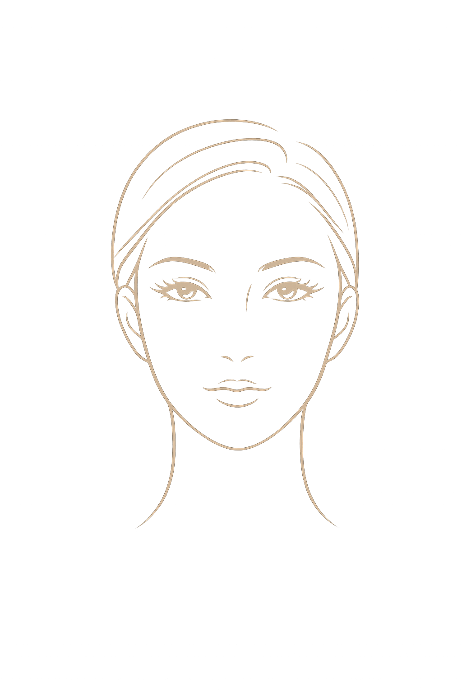
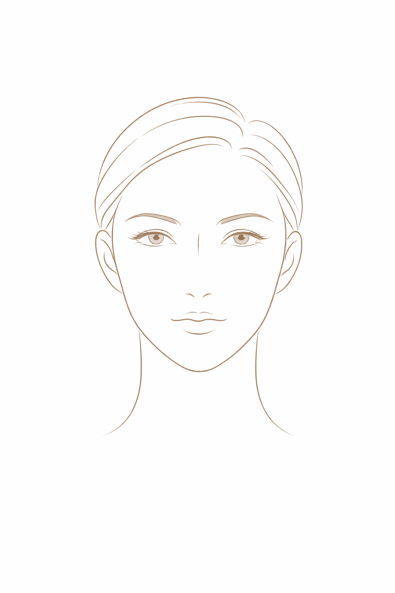

你說：
ChatGPT 說：
这个想法其实挺有价值的，而且很“刚需”——很多做医美的人确实记不住项目周期、恢复期和效果变化。如果你设计得好，它可以从“记录工具”升级成“个人医美管理系统”。
我帮你从产品定位 + 页面设计 + 功能结构 + 氛围风格完整帮你搭一版思路，你可以直接拿去做原型（甚至给AI生成UI）。
一、产品定位（先定调）
名称建议：
-
医美管理助手（偏功能）
-
Beauty Log（偏轻奢）
-
Skin Timeline（偏高级）
-
医美日历（偏实用）
核心定位一句话：
👉 “帮用户记住过去、管理现在、规划未来的医美管家”
二、核心功能结构（建议做4个主页面）
1️⃣ 首页（仪表盘）——“一眼掌控状态”
这是最重要的页面，要有“高级感 + 安心感”。
模块设计：
-
🧴 今日状态卡
-
距离上次项目：XX天
-
当前恢复阶段：恢复中 / 稳定期 / 可再次操作
-
皮肤状态（自评）：⭐️⭐️⭐️⭐️☆
-
-
⏰ 下次提醒
-
“水光针：还有 12 天”
-
“光子嫩肤：建议 5 天后可做”
-
-
📊 项目频率总结（小卡片）
-
本月做了：2次
-
今年累计：8次
-
👉 风格建议：卡片式 + 大留白 + 柔和阴影（像Apple Health）
2️⃣ 记录页（核心功能）——“像记日记一样简单”
➕ 添加项目（重点设计）
用户体验必须“无脑好用”
输入内容：
-
项目名称（可选推荐）
-
部位（脸 / 下巴 / 全脸）
-
医院 / 医生（可选）
-
日期（自动默认今天）
-
花费
-
感受（滑动选择 + 可写文字）
-
😍 很满意 / 🙂 一般 / 😕 不满意
-
-
上传照片（前后对比）
👉 关键点：减少输入，让记录像发朋友圈一样简单
3️⃣ 时间轴（Timeline）——“最有高级感的页面”
这是你产品的“灵魂页面”。
设计：
-
类似 IG / Apple 健康 / 日历
-
按时间纵向排列
例：
2026.04.10
💉 水光针
📍江南某医院
✨效果：补水明显
2026.03.20
✨ 光子嫩肤
📍皮肤科
😊效果：提亮
👉 可以加：
-
图片对比滑动
-
标签（抗老 / 补水 / 美白）
4️⃣ 提醒页（智能核心）——“真正解决痛点”
这是让你产品“有价值”的地方。
功能：
-
自动计算周期（关键！）
-
水光针 → 30天
-
光子 → 20~30天
-
热玛吉 → 6~12个月
-
👉 用户不用记，你帮他记
展示：
-
日历形式
-
倒计时提醒
-
推送通知
三、页面风格设计（重点：大气 + 温馨）
🎨 色彩建议
-
主色：奶油白 / 浅米色 / 淡粉
-
辅色：莫兰迪粉 / 浅灰紫
-
点缀：金色（轻奢感）
👉 避免：纯白+黑字（太冷），要“有温度”
🧱 UI风格关键词
你可以直接拿去喂AI设计：
-
“极简医疗美学”
-
“女性向轻奢”
-
“Apple Health + 美妆风”
-
“柔和渐变 + 毛玻璃”
-
“卡片式布局 + 圆角”
✨ 细节设计（很关键）
1. 动效
-
添加记录 → 微弹出动画
-
时间轴滑动 → 丝滑
-
完成提醒 → 小勾动画 ✔️
2. 情绪设计
-
做完项目后：
👉 “今天也在认真变美 ✨” -
提醒：
👉 “差不多可以安排一次护理啦～”
👉 让它不像工具，而像“懂你的管家”
四、差异化（建议你一定加）
🔥 1. 效果趋势分析（高级功能）
-
用户评分变化曲线
-
皮肤状态趋势
👉 很容易拉开和普通记录app差距
📸 2. AI对比（后期可以做）
-
自动对比前后照片
-
提示变化（肤色、毛孔等）
🧠 3. 智能建议（未来版本）
-
“你最近3次水光效果下降，建议更换项目”
-
“间隔太短，建议延长周期”
五、商业化（提前帮你想好）
你这个是可以赚钱的：
-
高级版订阅（¥10~30/月）
-
无限记录
-
AI分析
-
云备份
-
-
医院合作（后期）
-
推荐机构（注意合规）
-
六、技术建议（你要自学代码）
如果你要自己做：
初期最快路径：
-
Flutter（跨平台）
-
或 React Native
更简单：
👉 直接用：
-
FlutterFlow（无代码）
-
或 Supabase + 前端
七、我帮你总结一句最核心方向
👉 “做一个让用户‘安心变美’的记录工具，而不是冷冰冰的数据表”
如果你愿意，我可以帮你下一步直接做：
-
🎨 UI原型图（可以直接给开发用）
-
📱 App页面结构图（可做PRD）
-
🧠 功能优先级（帮你一步步做，不会乱）
你可以跟我说：
👉 “帮我出第一版UI草图” 或 “我想先做MVP版本”
你說：
ChatGPT 說：
我先直接说结论：
👉 这个App整体不算难，但“做好”和“做出来”是两件完全不同的事。
我们拆开讲你就会很清楚。
一、从“能做出来”的角度看：确实不复杂 ✅
如果你只是做一个 MVP（最小版本），它其实属于：
👉 中低难度 App（非常适合入门练手）
因为核心就是这几件事：
1. 数据记录（CRUD）
-
添加医美项目
-
编辑 / 删除
-
保存到数据库
👉 这是所有App最基础的功能
2. 时间计算（提醒）
-
记录日期
-
+30天 / +90天
-
生成提醒
👉 逻辑很简单，不涉及复杂算法
3. 页面展示
-
列表（时间轴）
-
卡片（首页）
-
表单（添加记录）
👉 UI虽然可以做高级，但技术实现不难
4. 本地通知
-
到时间提醒用户
👉 Flutter / iOS / Android 都有现成插件
✔️ 所以如果你目标是：
“我想做一个自己能用的App”
👉 完全可行，而且难度友好
二、但从“做得好”的角度看：难度会上升 ⚠️
真正难的部分不是代码，而是这些：
❶ 产品体验（最大难点）
比如：
-
用户会不会懒得记录？
-
输入是不是太复杂？
-
提醒会不会烦？
👉 这些决定：
用户会不会用下去
❷ UI设计（你特别在意的“大气温馨”）
实现一个页面很简单
但做到这种感觉👇很难：
-
不廉价
-
不像工具
-
有“医美高级感”
👉 这属于设计能力，不是代码能力
❸ 智能提醒（核心价值）
简单版：
-
固定30天提醒 ✅
高级版：
-
根据项目不同自动调整
-
根据用户历史优化
👉 这里开始有“产品深度”
❹ 数据结构设计（容易被忽略）
比如：
-
一个项目是否可以多次？
-
一个项目是否绑定照片？
-
如何做统计？
👉 一开始设计不好，后面很难改
三、真实难度分级（帮你认清）
我给你一个非常真实的难度拆分：
🟢 Lv1（简单）
👉 自用版本（1~2周能做出来）
-
记录项目
-
简单列表
-
手动提醒
✔️ 非常适合你现在
🟡 Lv2（中等）
👉 可以给别人用
-
登录 / 云同步
-
UI美化
-
自动周期提醒
⏱️ 1~2个月
🔴 Lv3（难）
👉 商业级产品
-
AI分析
-
用户增长
-
医院合作
-
精致UI + 动效
⏱️ 3~6个月+
四、给你的真实建议（很重要）
你现在最好的路径是：
👉 不要一上来就做“完美App”
而是：
第一步（必须这样做）
👉 做一个“很丑但能用”的版本
只做：
-
添加记录
-
时间轴
-
简单提醒
第二步
👉 再慢慢优化：
-
UI变好看
-
加情绪设计
-
加统计
五、我帮你一句话总结
👉 这个项目是：技术简单 + 产品不简单
-
写出来：不难 ✅
-
做得好：有挑战 🔥
如果你愿意，我可以帮你走得更快一点：
👉 我可以直接帮你：
-
列一个 “7天做出第一个版本”的开发计划
-
或帮你做 最简单的页面结构（你直接照着写代码）
你只要说一句：
👉 “给我一个7天开发路线”
你說：
ChatGPT 說：
我先按“你准备用 Vercel + Cursor 来做这个医美记录 app”来给你落地判断：这条路是可以的，而且比你单纯硬写原生更适合新手。接下来我会先帮你把技术路线收窄成一套最省力的做法，再告诉你哪些部分真的简单、哪些地方最容易卡住。
可以，而且这套组合很适合你这个 app。
结论是：
👉 Cursor 负责“开发提速”
👉 Vercel 负责“部署上线”
👉 你这个医美记录 app 最适合再配一个 数据库后端，我更建议 Supabase，这样会比“只靠 Vercel”更顺手。Vercel 对 Next.js 支持非常好，官方就把 Next.js 作为核心全栈方案来部署；Cursor 现在也主打 agent 式协作开发，适合你这种“有产品想法、要快速把功能做出来”的路径。Next.js+3Vercel+3Cursor+3
先回答你最关心的
这个 app 用 Vercel + Cursor 做，难度是偏友好的。
因为你的第一版本质上就是：
-
用户新增一条医美记录
-
保存日期、项目、感受、照片
-
算出下次提醒时间
-
展示时间轴和首页卡片
这类功能很适合用 Next.js 做前端和接口，再部署到 Vercel。Next.js 本身就是全栈 Web 框架，Vercel 官方也提供直接部署和预览环境。Vercel+2Vercel+2
我建议你的技术路线
我不建议你一开始就搞太复杂，直接这样配：
最适合你的组合
-
前端：Next.js
-
UI：Tailwind CSS + shadcn/ui
-
开发工具：Cursor
-
部署：Vercel
-
数据库 / 登录 / 存储：Supabase
原因很简单：
-
Next.js + Vercel 天然顺
部署、预览、环境变量这些都很方便。Vercel+2Vercel+2 -
Supabase 很适合这种“记录型 app”
它直接给你 Postgres、Auth、Storage，官方也有 Next.js 快速上手和 Auth 指南。对“用户登录、记录表、图片上传”这种需求特别合适。Supabase+3Supabase+3Supabase+3 -
Cursor 很适合你这种方式
你可以让它根据你的描述生成页面、表结构、增删改查、提醒逻辑，再自己一点点改。Cursor 官方最近也更强调 agent 式开发和快速改代码。Cursor+3Cursor+3Cursor+3
如果你坚持“尽量都放在 Vercel”
也不是不行。
可以这样：
-
Next.js 前端和 API 路由：放 Vercel
-
数据库：Vercel Marketplace 接 Postgres
-
图片：Vercel Blob
Vercel 现在的 Postgres 文档里说明，它是通过 Marketplace 集成外部 Postgres 提供商，并自动注入环境变量；Blob 适合存图片和文件。Vercel+3Vercel+3Vercel+3
但我还是更建议你第一版直接上 Supabase，因为：
-
登录更省事
-
表结构管理更直观
-
图片上传更成熟
-
以后做提醒、统计、用户数据也更好扩展
这个项目里，哪些简单，哪些会卡你
简单的部分
-
登录页
-
首页卡片
-
新增记录页
-
时间轴列表
-
记录保存到数据库
-
Vercel 部署上线
这些都算标准活。Cursor 能帮你省很多体力。Vercel+2Cursor+2
稍微容易卡的部分
-
提醒
Web app 的提醒没有原生 app 那么顺。如果只是网页，浏览器通知体验一般；如果以后你想做得更像手机 app，可能要往 PWA 或 React Native 走。 -
照片对比
上传、压缩、展示前后对比，不难，但细节多。 -
项目周期规则
不同医美项目的周期并不统一，最好做成“默认建议 + 用户自己修改”，别一开始就写死。
我建议你第一版只做 5 个页面
非常够了：
-
欢迎 / 登录页
-
首页 Dashboard
显示上次项目、下次提醒、最近记录 -
新增记录页
项目名、日期、部位、感受、照片、下次提醒日 -
时间轴页
按时间展示所有医美记录 -
项目详情页
看单次记录、编辑、删除、照片对比
你的数据库先这样设计就够用
先别搞复杂。
users
-
id
-
email
-
created_at
treatments
-
id
-
user_id
-
treatment_name
-
area
-
clinic_name
-
treatment_date
-
cost
-
notes
-
satisfaction_score
-
next_due_date
-
created_at
treatment_photos
-
id
-
treatment_id
-
image_url
-
type_before_after
这样已经足够支撑第一版。
你现在最适合的开发顺序
按这个做，最稳：
第 1 步
用 Cursor 创建 Next.js 项目，接上 Tailwind
第 2 步
接 Supabase，先把登录跑通
第 3 步
把“新增医美记录”做出来
第 4 步
做“时间轴列表”
第 5 步
做首页提醒卡片
第 6 步
部署到 Vercel
最现实的一句话
用 Vercel + Cursor 做这个 app，方向是对的。
但更准确地说，是：
Cursor + Next.js + Supabase 开发，Vercel 上线。
这是你现在最省力、最容易做出成品的一条路。
如果你一开始只做 Web 版，这个项目对你来说是可以掌控的难度。
下一步最有用的是：我直接帮你把这套 app 的 MVP 功能清单 + 页面结构 + 技术栈目录 一次性列出来，你拿去就能在 Cursor 开工。
你說：
ChatGPT 說：
我先把重点放在“页面结构怎么避免流水账、还能有成就感”这件事上。你这个 app 的核心不是“记了多少条”，而是让用户一眼看到自己的护理节奏、变化和下一步安排。
有，且你这个 app 最该下功夫的就是页面模块设计。
因为它一旦做成“流水账”，用户很快就会觉得只是个记事本；但如果做成个人医美管理面板，感受会完全不一样。
我建议你不要按“功能堆页面”，而是按用户心智来设计：
看状态 → 记项目 → 看节奏 → 收提醒 → 留感受
这样会更高级。
一、先定 5 个主模块就够了
我建议底部导航做这 5 个：
1. 首页
不是列表首页，而是个人医美总览页
作用：
-
今天的状态
-
距离上次项目多久
-
下次项目还有几天
-
最近皮肤状态
-
本月护理完成度
这页负责“安心感”和“掌控感”。
2. 日历
这是你说的重点，而且它特别适合做“成就感”。
作用：
-
哪天做过项目
-
哪天该复做
-
哪天在恢复期
-
哪天上传过皮肤测试
这页负责“节奏感”和“仪式感”。
3. 记录
这页不是流水账，而是分类后的医美档案
作用：
-
所有项目记录
-
按项目 / 部位 / 时间筛选
-
进入单次详情
-
查看照片、感受、测试结果
这页负责“清晰整理”。
4. 日记
偏轻情绪化，和项目记录区分开。
作用：
-
记录做完当天感受
-
恢复期变化
-
心情、效果、自评
-
可附照片
这页负责“陪伴感”。
5. 我的
设置与资料页
作用：
-
周期模板设置
-
提醒管理
-
常做项目管理
-
医院/医生收藏
-
数据导出
这页负责“个人化”。
二、最推荐的首页结构
首页不要做成“最近记录列表”，而要做成仪表盘式卡片布局。
首页模块建议
① 顶部欢迎区
内容：
-
用户昵称
-
一句温柔文案
例如：
“今天也在认真变美”
“你的护理节奏很稳定”
作用：
-
拉开 app 气质
-
提高温度
② 本次周期主卡
这是首页最核心的大卡片。
显示：
-
上次做的项目：水光针
-
距离上次：18天
-
当前阶段：稳定期
-
建议下次：12天后
这张卡要做得最漂亮，像“本周期面板”。
建议视觉：
-
大圆角
-
柔和渐变
-
中间一个数字倒计时
-
下面小字说明状态
这样用户一打开就知道自己在哪个阶段。
③ 本月护理成就卡
这个就是你说的“成就感”。
可展示：
-
本月完成 2 次护理
-
已坚持记录 14 天
-
连续上传皮肤状态 3 次
-
本月护理完成度 80%
可以做成小徽章或环形进度。
这会让用户感觉自己在“经营皮肤状态”，而不是单纯记账。
④ 最近变化卡
显示：
-
最近一次日记摘要
-
最近一次皮肤测试结果
-
最近一张对比照
作用：
-
让“变化”成为首页的一部分
-
强化结果导向
⑤ 快捷入口区
建议做 4 个圆角按钮：
-
记项目
-
写日记
-
上传测试
-
设置提醒
这样用户操作会非常顺。
三、日历页怎么做才不会普通
你这个 app 的日历页最好不要只是普通日期格子，而要做成护理日历。
日历页建议分三层
① 月视图日历
在日期上做标记，不同标记代表不同信息：
-
做项目：实心点
-
恢复期：淡色条
-
下次提醒：小铃铛
-
上传测试：小图标
-
写过日记：小星星
这样一个月看下来，会很有“管理轨迹感”。
② 选中某天后的下方详情卡
点某一天，下面出现卡片：
-
当天做了什么项目
-
恢复状态
-
有无照片
-
有无日记
-
有无测试结果
这样日历不是孤立的，是和记录联动的。
③ 周期轨道视图
这是一个很加分的小设计。
例如点开“水光针”后，显示：
-
施作日
-
恢复期
-
稳定期
-
建议复做日
用一条横向时间条展示。
这会让 app 看起来专业很多。
四、记录页不要做“流水账”，要做成档案库
这里的关键是：默认不是纯时间流，而是卡片分组。
记录页推荐结构
顶部筛选
-
全部
-
水光
-
光子
-
热玛吉
-
针剂
-
测试结果
展示方式
默认按月份分组，比如：
2026年4月
-
水光针
-
皮肤测试
-
术后日记
2026年3月
-
光子嫩肤
-
修复护理
这样视觉上比一条一条流水更清楚。
单条记录卡片内容
-
项目名称
-
日期
-
部位
-
感受评分
-
标签：恢复中 / 效果明显 / 已完成周期
-
附件提示：照片 2 张 / 测试 1 份 / 日记 1 条
这会让每条记录像一个“完整事件”。
五、日记页怎么设计更温柔
日记不要做成传统长文本笔记，而是做成轻量恢复日志。
每篇日记建议字段
-
日期
-
关联项目
-
今日状态
-
心情
-
自评效果
-
备注
-
照片
可以加入快捷选项：
-
今天肤感如何？
-
泛红情况？
-
上妆服帖度？
-
满意度？
这样用户很容易写，不会觉得麻烦。
日记页展示建议
不要只有文字，可以是这种卡片：
-
4月10日
今天肤感不错，补水感明显，泛红减轻。
标签：恢复第3天 / 满意 / 上传照片
这种很有陪伴感。
六、皮肤测试结果模块怎么放最合适
这个功能很有价值，但不要单独做成太重的页面。
建议做成记录体系的一部分，再在首页做摘要。
皮肤测试支持的内容
-
测试日期
-
上传图片/PDF
-
指标录入
-
水分
-
油脂
-
毛孔
-
色素
-
敏感
-
-
总评
-
医院建议
展示方式
方式一：作为一种特殊记录
和项目记录并列，类型叫：
-
皮肤测试
方式二：首页显示最近一次测试摘要
例如：
-
水分：较上次提升
-
敏感：稳定
-
毛孔：轻微波动
这样更实用。
七、提醒模块怎么设计才顺手
提醒不能只做“到时间提醒”，要做成自定义周期系统。
每次记录时
用户可以选择：
-
不提醒
-
30天后提醒
-
60天后提醒
-
自定义日期
-
自定义周期
还可以有一个选项：
“保存为该项目默认周期”
例如：
-
水光默认 30 天
-
光子默认 28 天
-
热玛吉默认 180 天
这样以后用户记一次就很轻松。
提醒页建议内容
-
即将到期
-
本周提醒
-
本月安排
-
已过期未处理
显示成清单卡片，不要太复杂。
例如：
-
水光针：3天后
-
光子嫩肤：下周二
-
皮肤测试：建议 10 天后上传新结果
八、最容易做出高级感的页面组合
如果你想“好看又实用”，我最推荐这套页面层级：
底部导航
-
首页
-
日历
-
记录
-
日记
-
我的
首页内的核心卡片
-
周期主卡
-
成就卡
-
最近变化卡
-
快捷操作
悬浮按钮
右下角一个 +
点开后出现：
-
记项目
-
写日记
-
上传测试
这会让整个 app 更整洁。
九、视觉风格建议
你说要“大气又温馨”，那就别做成医院系统感，也别做成少女粉过头。
建议关键词
-
奶油白
-
柔雾粉
-
浅杏色
-
灰紫
-
低饱和金色点缀
UI感觉
-
大圆角
-
留白多
-
细阴影
-
轻渐变
-
线条少一点
-
字体干净
气质方向
像：
-
高级护肤品牌会员页
-
Apple Health 的简洁感
-
女性向习惯追踪 app 的温柔感
十、给你一个最推荐的 MVP 页面清单
你第一版先做这些就很够了：
1. 首页
-
周期主卡
-
本月成就
-
最近记录
-
快捷入口
2. 日历页
-
月历
-
标记项目/提醒/测试/日记
-
点击某天看详情
3. 新增记录页
-
项目名
-
日期
-
部位
-
感受
-
周期提醒
-
照片上传
4. 记录列表页
-
月份分组
-
筛选
-
点开详情
5. 日记页
-
简单文字
-
情绪/状态标签
-
照片
6. 测试结果上传页
-
上传图片或 PDF
-
填简单指标
-
写医院建议
7. 提醒设置页
-
自定义周期
-
默认周期模板
十一、最关键的一句建议
你这个 app 不要把“记录”当核心视觉，
而要把：
周期、变化、成就、提醒
做成核心视觉。
这样它就不会像流水账，反而像一个“医美进度管理器”。
如果你要，我下一步可以直接帮你出一版
完整页面结构图（每页有哪些模块），你可以直接拿去让 Cursor 开始做。
你說：
ChatGPT 說：
我先直接给你流程结论：可以先在 Cursor 里开始做，不需要先去 Vercel。 我再顺手把“先做什么、什么时候接 Vercel”给你排成最省力的顺序，避免你一开始就把环境搞复杂。
可以，先用 Cursor 开发，本地跑起来后，再接 Vercel 部署。
不需要一开始先开 Vercel。Cursor 官方也是从“打开代码库、先做修改”开始的，本地开发完全没问题；Vercel 更适合放在你项目能跑之后做预览和上线。Cursor+1
我建议你按这个顺序走：
第一步：先在 Cursor 里开工
先做本地项目，不用急着上 Vercel。
最顺的组合是：
-
Next.js
-
Tailwind CSS
-
shadcn/ui
-
Supabase
-
Cursor
-
最后再 Vercel
因为 Next.js 本来就支持本地开发，Supabase 也有专门的 Next.js quickstart。Supabase+1
第二步：本地先做出最小版本
你先做到这几个就够了：
-
首页
-
日历页
-
新增记录页
-
记录列表页
-
提醒设置页
先让它在本地 npm run dev 跑起来。Supabase 文档的 Next.js quickstart 也是先创建项目、连数据库、再本地开发。Supabase+1
第三步：等本地能用了，再接 Vercel
Vercel 最常见的方式是把 Git 仓库导入进去，之后每次提交都会自动部署。也可以用 Vercel CLI 部署。Vercel+1
也就是说，你的实际流程应该是：
Cursor 写代码 → 本地测试 → GitHub → Vercel 部署
而不是：
先 Vercel → 再开始写
对你来说，最省力的实际步骤
方案 A：最推荐
-
用 Cursor 新建 Next.js 项目
-
接 Tailwind 和 shadcn/ui
-
去 Supabase 建项目
-
把
.env.local配好 -
本地把页面和数据库连通
-
推到 GitHub
-
导入 Vercel 部署
这是最顺的。Vercel 对 Next.js 支持很强，导入 Git 仓库后自动部署体验最好。Vercel+1
什么时候该开 Vercel
你做到下面这个程度，就可以上 Vercel 了：
-
页面能打开
-
能新增一条医美记录
-
数据能写进 Supabase
-
日历能显示基础内容
只要这 4 个通了，就值得部署一个预览版给自己手机上看。
什么时候不用先碰 Vercel
你现在这些事情都可以先在 Cursor 里完成：
-
产品结构搭建
-
页面排版
-
组件生成
-
表单逻辑
-
Supabase 接入
-
本地调试
所以当前阶段，Cursor 是主战场，Vercel 是发布台。Cursor+1
你现在最适合的一句话操作建议
先别开 Vercel，先在 Cursor 里把第一版页面和数据跑起来。
等本地版本能新增记录和看日历，再接 Vercel。
你下一步最该做的是这个：
在 Cursor 里直接创建一个 Next.js 医美记录 app 骨架。
我可以下一条直接给你一份 可以粘贴到 Cursor 的完整提示词，让它帮你把第一版项目直接生成出来。
你說：
ChatGPT 說：
不是，Vercel 不是用来做 UI 设计的，这个你要纠正一下认知。
我帮你用最直白的话讲清楚👇
一、Vercel 是干嘛的？
👉 Vercel = 把你做好的网站/App“放到网上”的工具
它的作用是：
-
部署网站（上线）
-
提供访问地址（比如 xxx.vercel.app）
-
自动更新（你改代码就自动更新）
-
提供服务器能力（接口、API）
二、那 UI 是谁做的？
👉 UI 是你用这些来做的：
-
Next.js（页面结构）
-
Tailwind（样式）
-
shadcn/ui（组件库）
-
Figma（设计稿，如果你画图）
👉 Cursor 负责帮你写这些代码
三、简单类比（非常重要）
你可以这样理解：
| 工具 | 类比 |
|---|---|
| Cursor | 程序员助手（帮你写代码） |
| Next.js | 搭房子的框架 |
| Tailwind | 装修材料 |
| UI设计 | 房子的设计图 |
| Vercel | 把房子建到地段上，让别人能来 |
👉 所以：
UI 是“房子长什么样”
Vercel 是“房子建在哪儿、别人能不能来”
四、你现在正确的流程应该是
❌ 错误理解
先用 Vercel 做 UI → ❌ 不存在
✅ 正确流程
-
在 Cursor 里写 UI（Next.js + Tailwind）
-
本地跑起来看效果
-
满意后上传 GitHub
-
用 Vercel 一键部署
五、那为什么你会觉得 Vercel 是 UI？
因为它：
-
有很漂亮的官网
-
有预览功能（像设计工具）
-
可以实时看页面
👉 但本质还是“部署平台”，不是设计工具
六、如果你想做“UI设计”，该用什么？
你有两个选择：
1️⃣ 不画图，直接写（推荐你）
👉 直接在 Cursor 里生成页面
优点：
-
快
-
所见即所得
-
适合你这种自己做 app 的
2️⃣ 先设计再开发
👉 用 Figma
适合：
-
要精致UI
-
多人合作
-
商业级产品
七、给你一个最关键建议
👉 你现在阶段，不要分“设计”和“开发”
直接：
在 Cursor 里一边生成 UI，一边调整
这是最快的。
八、一句话总结
👉 Vercel 是“上线工具”，不是“设计工具”
如果你愿意，我可以下一步直接帮你：
👉 写一段可以复制到 Cursor 的指令
让它直接帮你生成：
-
首页（带周期卡）
-
日历页
-
记录页UI骨架
你可以立刻开始做。
你說：
ChatGPT 說：
你这个问题问得很好，而且你察觉到“不一致”，说明你在认真理解流程 👍
我直接给你讲清楚本质原因，不是我前后矛盾，而是两种项目类型不同 → 最优路径不同。
一、核心区别：你做的是两种完全不同的东西
🟦 留学App（之前）
👉 信息展示 + UI很重要
特点：
-
页面多
-
排版复杂（卡片、列表、筛选）
-
视觉体验很关键
-
功能逻辑相对简单
所以当时我建议你：
👉 先用 Vercel（v0）生成UI → 看效果 → 再进 Cursor改
✔️ 因为重点是：
“先把页面长什么样搞出来”
🟩 医美管理App（现在）
👉 数据记录 + 状态管理 + 时间逻辑
特点：
-
有数据库（记录、日记、测试）
-
有状态（恢复期、周期）
-
有提醒（时间逻辑）
-
UI不是最难的，结构才是关键
二、本质区别一句话
👉 留学App：偏“展示型产品” → 先UI
👉 医美App：偏“工具型产品” → 先结构
三、为什么这次不建议你先用 Vercel（v0）
因为你这个项目如果先做 UI，会出问题：
❌ 问题1：UI很好看，但没法用
比如：
-
页面有了
-
但不能保存记录
-
没有数据库
-
没有周期逻辑
👉 就变成“空壳App”
❌ 问题2：后面重构成本很高
你会遇到：
-
UI结构和数据结构对不上
-
日历和记录逻辑冲突
-
提醒不好接
👉 等于推翻重做
四、这次正确顺序（非常关键）
✅ 医美App正确流程
Step 1（现在）
👉 Cursor 直接搭结构
做：
-
数据表（treatments）
-
新增记录页
-
简单列表
-
日期字段
Step 2
👉 再加 UI优化
-
卡片样式
-
首页仪表盘
-
日历样式
Step 3
👉 最后再上 Vercel
五、什么时候可以用 Vercel（v0）？
不是不能用，而是：
👉 在这个阶段用：UI优化阶段
比如你已经有：
-
数据结构
-
页面逻辑
这时候你可以：
👉 用 v0 生成：
-
首页卡片设计
-
日历UI
-
成就模块
然后复制进 Cursor
六、给你一个非常实用的判断方法
以后你可以自己判断用哪种方式：
如果是这种项目👇
-
官网
-
展示页面
-
内容平台
👉 先 v0（UI优先）
如果是这种👇
-
记录类App
-
工具类App
-
有数据库 / 状态 / 逻辑
👉 先 Cursor（结构优先）
七、你现在最该做的一步
👉 不要再纠结工具了，直接开干结构
在 Cursor 里做：
-
创建 Next.js 项目
-
建一个“新增医美记录”页面
-
能保存一条数据（哪怕只是console.log）
八、我帮你总结一句最重要的话
👉 留学App是“长什么样最重要”
👉 医美App是“怎么用最重要”
如果你愿意，我下一步可以直接给你：
👉 一段“Cursor专用指令”
让它直接帮你生成：
-
项目结构
-
数据模型
-
新增记录页
-
基础列表页
你可以直接开始写，不会卡住。
你說：
ChatGPT 說：
好，这一步我帮你直接“喂好饭”了。
你把下面这段 完整复制到 Cursor，它会直接帮你生成第一版项目骨架（非常关键的一步）。
🚀 Cursor 初始化指令（直接复制）
你是一个资深全栈工程师，请帮我创建一个「医美管理助手」Web App 的第一版（MVP）。
技术栈要求：
- Next.js（App Router）
- TypeScript
- Tailwind CSS
- 使用现代组件结构（函数组件 + hooks）
- UI风格：简洁、温馨、轻奢（类似 Apple Health + 女性护肤App）
-------------------------------------
# 一、项目目标
这是一个用于个人记录医美项目的工具类App，核心功能是：
- 记录医美项目
- 管理项目周期（用于提醒）
- 展示记录列表
- 后续会扩展日历、日记、皮肤测试等功能
现在只做第一版（MVP），要求结构清晰、易扩展。
-------------------------------------
# 二、请帮我实现以下页面
## 1. 首页（/）
简单占位即可，但要有基本结构：
- 标题：医美管理助手
- 一个卡片显示：
- 最近一次项目（先用假数据）
- 距离今天多少天
- 下次建议时间（假数据）
- 一个按钮：
👉 “新增记录”
-------------------------------------
## 2. 新增记录页（/add）
表单字段：
- 项目名称（text）
- 部位（text）
- 医院名称（text）
- 日期（date）
- 花费（number）
- 感受评分（1~5 下拉或按钮）
- 备注（textarea）
- 下次提醒日期（date）
按钮：
- 保存记录
要求：
- 使用 React useState 管理表单
- 提交时先 console.log 数据
- 结构清晰，方便后续接数据库
-------------------------------------
## 3. 记录列表页（/records）
展示一个列表（先用 mock 数据）：
每条记录卡片包含：
- 项目名称
- 日期
- 部位
- 感受评分
- 是否有下次提醒（有则显示日期）
样式要求：
- 卡片式布局
- 圆角 + 阴影 + 留白
- 看起来干净高级
-------------------------------------
# 三、组件结构要求
请合理拆分组件，例如：
- components/TreatmentCard.tsx
- components/FormInput.tsx
- components/Layout.tsx
-------------------------------------
# 四、样式要求（重点）
整体风格：
- 背景：浅米色 / 奶油白
- 卡片：白色 + 轻阴影
- 圆角：lg 或 xl
- 字体：清晰、留白多
- 不要做成“后台管理系统风格”
-------------------------------------
# 五、额外要求
- 使用 Tailwind 实现样式
- 所有页面可正常跳转（使用 Next.js Link）
- 代码清晰、易读
- 不需要接数据库（后面再接 Supabase）
-------------------------------------
# 六、输出内容
请直接生成完整项目结构，包括：
- app 目录结构
- 页面代码
- 基础组件
- mock 数据
-------------------------------------
目标：让我可以直接 npm run dev 启动，并看到一个可用的第一版界面。
🧠 用法说明（很重要）
你接下来这样做：
-
打开 Cursor
-
新建一个 Next.js 项目（或让它帮你生成）
-
把这段提示粘进去
-
让它生成代码
-
运行：
Bashnpm run dev
🟡 生成之后你要检查 3 件事
如果这3个OK，你就已经成功80%了：
✅ 能打开首页
✅ 点击“新增记录”能跳转
✅ 表单提交能 console.log 数据
🚧 下一步我会建议你做这个（提前告诉你）
等你跑起来后，我们下一步做：
👉 接 Supabase（真正存数据）
👉 做日历页（你的核心亮点）
👉 做“周期提醒逻辑”
🔥 最后一句重点
你现在这一步不是在“做完整App”，
而是在：
👉 搭一个能跑、能扩展的骨架
这一步做好，后面就会非常顺。
等你生成完，可以把界面截图给我
我可以帮你直接改 UI，让它更像“高级医美App”。
你說：
ChatGPT 說：
这个界面说明 你的电脑里还没装 Node.js / npm，所以 Cursor 现在没法帮你直接创建 Next.js 项目。
先把运行环境装好就行，不是大问题。
你现在按这个顺序做。
第一步：安装 Node.js
最简单的方法：
打开 Node.js 官网，下载 LTS 版本 安装。
建议装 Node 20 LTS 或 Node 22 LTS。
安装完成后，打开你 Mac 的终端，输入：
Bashnode -v
npm -v
如果都能显示版本号，就说明装好了。
第二步：回到 Cursor
装好以后，重新打开 Cursor，然后直接对它说：
请帮我创建一个 Next.js 项目，使用 TypeScript、Tailwind CSS、App Router，项目名叫 beauty-manager
如果它还是不帮你自动创建，你就自己在终端运行：
Bashnpx create-next-app@latest beauty-manager --typescript --tailwind --app
创建完成后进入项目：
Bashcd beauty-manager
npm run dev
然后浏览器打开：
Bashhttp://localhost:3000
第三步：再把我给你的那段医美 app 指令发给 Cursor
等项目已经创建好后，再把之前那段产品需求提示词贴给 Cursor，让它开始生成页面和组件。
因为那段提示词是让它“在项目里写代码”，不是“先给你装开发环境”。
你现在遇到的问题，本质上是这个
不是 Cursor 不行，
而是它在说：
“我会写项目，但你这台电脑还没有运行 Next.js 所需的基础环境。”
就像还没装厨房，厨师没法做饭。
最稳的做法
你现在只需要完成这 3 件事：
-
安装 Node.js
-
终端确认
node -v和npm -v有结果 -
再回 Cursor 创建项目
你可以直接照着做的最短流程
安装 Node.js 后，在终端输入：
Bashnpx create-next-app@latest beauty-manager --typescript --tailwind --app
cd beauty-manager
npm run dev
跑起来以后，再把这句话发给 Cursor：
请基于这个 Next.js 项目，帮我生成一个“医美管理助手”MVP，包括首页、新增记录页、记录列表页，要求风格温馨简洁、卡片式布局、方便后续接入 Supabase。
如果你装完 Node 之后，我可以直接继续带你做下一步。
你說：
ChatGPT 說：
可以了，而且你现在这一步做得很标准 👍
我帮你确认一下你当前状态：
✅ 项目已经创建成功
路径：another-app
✅ Next.js + Tailwind 已经装好
✅ Cursor已经帮你初始化完成
👉 现在你已经具备“开始开发”的条件了
⚠️ 但先别急着粘那一大段（重要）
你现在还差一步👇
👉 先把项目跑起来！
在 Cursor 里点开终端（或用系统终端），运行：
Bashcd "/Users/qifengjiao/Desktop/another-app"
npm run dev
然后浏览器打开：
http://localhost:3000
👉 你应该看到：
-
一个 Next.js 默认页面（有 logo 或简单页面）
👉 如果这一步OK，说明：
你的开发环境完全正常
✅ 确认没问题后，再做这一步
👉 然后你再把我给你的那段 Cursor 指令粘进去
（就是那段“医美管理助手 MVP”）
🧠 为什么要分两步？
因为：
👉 现在 Cursor已经“建好房子了”
👉 你接下来是让它“装修 + 分房间”
如果你直接粘指令，有时候会：
-
覆盖结构
-
或生成混乱代码
🚀 正确顺序（你照这个走）
Step 1（现在）
运行：
Bashnpm run dev
Step 2
确认浏览器打开成功
Step 3
👉 回到 Cursor 对话框，粘这个👇
（简化版更稳👇）
请基于当前这个 Next.js 项目，帮我实现一个「医美管理助手」MVP：
需要页面：
1. 首页（显示最近项目 + 新增按钮）
2. 新增记录页（表单：项目名、日期、部位、感受、下次提醒）
3. 记录列表页（卡片式展示）
要求：
- 使用 Tailwind
- UI风格简洁温馨（类似护肤App）
- 拆分组件（卡片、表单）
- 先用 mock 数据，不接数据库
🎯 下一步你会看到什么
Cursor会开始：
-
改
app/page.tsx -
新建
/add -
新建
/records -
创建组件
👉 这一步就是你真正“开始做App”
🔥 最后一句很关键
你现在已经跨过最难的一步了：
👉 ❌ 环境问题（已解决）
👉 ❌ 项目初始化（已完成）
👉 ✅ 接下来就是“搭页面 + 做功能”
等你跑起来后，如果界面出来了：
👉 截图给我
我可以帮你直接改成高级医美UI风格（不是默认样式）
你說：
ChatGPT 說：
对，方向是对的。
你现在已经把开发服务器启动了，只是 Cursor 内置浏览器没正常连上。
我先帮你看图里最关键的信息：
-
右边显示：开发服务器在跑
-
地址是：
http://127.0.0.1:3000 -
但左边浏览器显示：Connection Failed
-
同时还有一个提示：
EMFILE: too many open files
这说明不是项目没启动，而是本地访问出了点问题。常见于 Cursor 内置浏览器、文件监听过多、或者端口启动不稳定。
先这样做，最快
第一步：不要先纠结 Cursor 内置浏览器
直接用你电脑自己的浏览器打开：
http://127.0.0.1:3000
先不要用 localhost，先用图里已经确认跑着的这个地址。
如果 127.0.0.1:3000 能打开，就说明项目本身没问题，只是 Cursor 里那个 Browser Tab 抽风了。
第二步：如果还是打不开，重启一次服务
在 Cursor 终端里按：
BashControl + C
停掉当前服务，然后重新运行：
Bashcd "/Users/qifengjiao/Desktop/another-app"
npm run dev
启动后看终端里有没有类似：
BashLocal: http://localhost:3000
或者：
BashLocal: http://127.0.0.1:3000
然后再复制这个地址到 Safari 或 Chrome 打开。
第三步：如果还不行，换端口试一下
有时候 3000 端口占用或者状态异常，直接换 3001：
Bashnpm run dev -- --port 3001
然后打开：
http://127.0.0.1:3001
或者：
http://localhost:3001
你图里那个 EMFILE 是什么
它的意思是：
打开监听的文件太多了。
不一定会导致完全跑不起来，但会让 Next.js 热更新、浏览器连接变得不稳定。
所以你现在最实用的做法不是先研究原理，而是：
-
先用系统浏览器访问
-
不行就重启
-
再不行就换端口
你之后怎么做
等页面能打开后，再进入真正开发。
顺序这样走最稳：
1. 先确认默认 Next.js 页面能打开
只要能看到默认页面，你的环境就通了。
2. 然后把这段话发给 Cursor
直接复制这段更合适：
请基于当前这个 Next.js 项目，帮我实现一个「医美管理助手」MVP。
先做 3 个页面：
1. 首页：显示标题“医美管理助手”，一个最近项目卡片，一个“新增记录”按钮，一个“查看记录”按钮
2. 新增记录页：表单包含 项目名称、日期、部位、感受评分、下次提醒日期、备注
3. 记录列表页：使用 mock 数据，卡片式展示项目名称、日期、部位、评分、提醒日期
要求：
- 使用 Tailwind CSS
- 风格简洁、温馨、轻医美感
- 使用 App Router
- 组件尽量拆分
- 先不要接数据库
3. 让 Cursor 改完代码后
再运行：
Bashnpm run dev
然后去浏览器看效果。
你现在先做这 3 件事
先按顺序来：
先试
用 Safari/Chrome 打开：
http://127.0.0.1:3000
不行再试
重启服务：
Bashcd "/Users/qifengjiao/Desktop/another-app"
npm run dev
还不行
换端口：
Bashnpm run dev -- --port 3001
把你终端里重新启动后的那几行输出发我，或者把外部浏览器打开后的截图发我，我直接告诉你下一步该点哪里。
你說：
ChatGPT 說：
不是，这个千万别粘到 Cursor 对话框里，这个是要在终端（Terminal）里运行的命令。
我帮你分清楚两种东西（很关键）👇
🧠 两种输入方式（一定要区分）
① 这种👇（你截图里的）
Bashcd "/Users/qifengjiao/Desktop/another-app"
npm run dev
👉 是命令（给电脑执行）
✔️ 要放在：
-
Cursor 下面的终端（Terminal）
-
或 Mac 自带“终端”
❌ 不是给 Cursor 聊天用的
② 这种👇（我之前给你的那种）
请帮我做一个医美管理助手页面...
👉 是给 Cursor 的“AI指令”
✔️ 要放在：
-
Cursor 右边的对话框
🚀 你现在正确操作是这样
第一步：打开终端（Cursor里或系统都行）
然后粘这个👇运行：
Bashcd "/Users/qifengjiao/Desktop/another-app"
npm run dev
第二步：浏览器打开
http://127.0.0.1:3000
或者：
http://localhost:3000
第三步（成功打开后）
👉 再去 Cursor 对话框，粘我给你的那段“医美App指令”
🎯 一句话帮你记住
👉 有 $ 或代码框写 Bash 的 → 去终端
👉 写中文让它帮你做页面的 → 去 Cursor 对话框
🔥 你现在只需要做一件事
👉 去终端运行这两行：
Bashcd "/Users/qifengjiao/Desktop/another-app"
npm run dev
然后告诉我：
👉 浏览器有没有打开页面（成功 or 报错）
我帮你下一步直接带到页面开发 🚀
你說：
ChatGPT 說：
很好，这一步我带你一步一步点哪里操作（Mac版），你照着做就行👇
🍎 方法一（最推荐）：用 Cursor 自带终端
👉 第一步：打开终端
在 Cursor 里：
👉 看最上面菜单栏
点击：
View（视图） → Terminal（终端）
如果你找不到：
👉 直接按快捷键：
BashControl + `
（键盘左上角那个反引号）
👉 打开后你会看到
下面会出现一个黑色区域👇
像这样：
Bashqifengjiao@MacBook ~ %
👉 这个就是终端，可以输入命令
👉 第二步：把这两行粘进去
Bashcd "/Users/qifengjiao/Desktop/another-app"
npm run dev
然后按 回车
👉 第三步：成功后会出现
类似：
BashLocal: http://localhost:3000
👉 第四步：打开浏览器
👉 用 Safari 或 Chrome 打开：
http://localhost:3000
🍎 方法二（备用）：用Mac自带终端
如果 Cursor 里不好用，也可以这样：
👉 打开方式
按：
BashCommand + Space
输入：
Terminal
然后回车
👉 然后做同样操作
Bashcd "/Users/qifengjiao/Desktop/another-app"
npm run dev
🚨 你现在最重要的目标
👉 看到浏览器里出现一个页面（Next.js默认页面）
只要看到页面：
✅ 环境成功
✅ 可以开始做App了
❗ 如果你还是找不到终端
你可以直接拍一张你 Cursor 全界面的截图
我帮你画箭头告诉你点哪里 👍
🔥 下一步预告（等你成功后）
你一旦打开页面，我就带你：
👉 用 Cursor 一步生成“医美App首页”
👉 直接变成你想要的样子（不是默认页面）
你现在先做这一件事：
👉 打开终端 + 运行那两行命令
然后告诉我：
👉 成功 or 报错截图
你說：
ChatGPT 說：
先别继续点了，我们先把“能不能跑起来”查清楚。
现在最重要的不是浏览器，而是终端里到底显示了什么。
请你做这个最短检查：
第一步
打开 Mac 自带终端，不要用 Cursor 内置浏览器。
按 Command + Space，输入 Terminal，回车。
第二步
把下面这几行一行一行复制进去：
Bashcd "/Users/qifengjiao/Desktop/another-app"
npm run dev
第三步
看终端最后出现的内容。
正常情况会看到类似：
BashLocal: http://localhost:3000
或者报错。
第四步
把终端最后 15 行内容原样发给我，或者截图发我。
你也可以先自己快速试两个地址：
http://127.0.0.1:3000
http://localhost:3000
如果都不行，再试换端口：
Bashcd "/Users/qifengjiao/Desktop/another-app"
npm run dev -- --port 3001
然后打开：
http://127.0.0.1:3001
大概率是这几种情况之一：
-
npm run dev实际没有成功启动 -
3000 端口被占用
-
Cursor 内置浏览器连不上，但系统浏览器可以
-
终端里有
EMFILE或别的报错
把终端输出发我，我直接告诉你该点哪一步。
你說：
ChatGPT 說：
很好，这个截图信息非常清晰 👍
问题已经找到了，而且很好解决。
🚨 你的问题本质
你现在是：
👉 已经启动过一次服务了
👉 现在又重复启动了一次
所以出现：
Port 3000 is in use
Another next dev server is already running
✅ 正确理解当前状态
你其实已经成功启动了！
关键这一行👇：
Local: http://localhost:3001
👉 说明现在真正运行的是：
👉 http://localhost:3001（不是3000）
🚀 你现在要做的
👉 用浏览器打开这个：
http://localhost:3001
或者：
http://127.0.0.1:3001
❗ 为什么你之前打不开
因为你一直在访问：
http://localhost:3000 ❌
但系统已经自动换成：
http://localhost:3001 ✅
🔧 顺便帮你清理一下（推荐）
现在你有两个进程在跑，有点乱，我们整理一下：
在终端输入👇（一行一行来）：
Bashkill 33543
如果还有提示再 kill：
Bashkill 33478
然后重新启动（干净环境）：
Bashnpm run dev
这时候你会看到：
Local: http://localhost:3000
👉 再打开：
http://localhost:3000
🎯 总结一句话
👉 你不是打不开
👉 是打开错端口了（3000 vs 3001）
🔥 下一步（很关键）
你现在先做这个：
👉 打开
http://localhost:3001
如果页面出来（Next.js默认页面）
👉 直接告诉我：“打开了”
我马上带你下一步：
👉 用 Cursor 生成你的“医美App页面” 🚀
你說：
ChatGPT 說：
很好，你这一步做得非常对 👍
现在状态是：
👉 你已经 成功把占用端口的进程关掉了（kill 完成）
👉 现在只是还没重新启动服务
🚀 下一步（就差最后一步了）
在终端里输入：
Bashnpm run dev
然后按回车
✅ 正常情况你会看到
类似：
BashLocal: http://localhost:3000
👉 这说明服务重新干净启动成功
🌐 然后立刻做这个
打开浏览器（Safari 或 Chrome）输入：
http://localhost:3000
🎯 成功标志
如果你看到：
-
Next.js 默认页面（有 logo 或简单页面）
👉 恭喜你：
环境100%成功 ✅
❗ 如果还打不开（备用）
试：
http://127.0.0.1:3000
🔥 接下来会发生什么
一旦你能打开页面：
👉 我马上带你进入真正开发：
-
生成首页（医美风格）
-
新增记录页
-
卡片UI（高级感）
🧠 你现在只做这一件事
👉 在终端输入：
Bashnpm run dev
👉 然后打开：
http://localhost:3000
然后告诉我一句：
👉 “打开了” 或 “还是不行（截图）”
我直接带你进入下一步 🚀
你說：
ChatGPT 說：
可以了，而且是完全成功了 ✅（非常关键的一步）
你现在这个页面👇
👉 就是 Next.js 正常运行的标志
这说明：
-
✅ Node.js 正常
-
✅ 项目创建成功
-
✅ 服务器运行正常
-
✅ 浏览器访问正常
👉 换句话说：开发环境已经100%打通了
🚀 下一步：开始做你的医美App（重点来了）
现在你要做的不是再折腾环境，而是：
👉 让 Cursor 帮你把这个页面改成你的App
👉 现在回到 Cursor 对话框
把这段话复制进去（很重要👇）：
请基于当前这个 Next.js 项目，帮我实现一个「医美管理助手」MVP。
先做3个页面：
1. 首页（/）
- 标题：医美管理助手
- 一个卡片显示最近项目（假数据）
- 一个“新增记录”按钮
- 一个“查看记录”按钮
2. 新增记录页（/add）
表单包含：
- 项目名称
- 日期
- 部位
- 感受评分（1-5）
- 下次提醒日期
- 备注
点击提交先 console.log 数据
3. 记录列表页（/records）
- 使用 mock 数据
- 卡片式展示（项目名、日期、部位、评分、提醒日期）
要求：
- 使用 Tailwind CSS
- UI风格：简洁、温馨、类似护肤App
- 使用 Next.js App Router
- 拆分组件（卡片、表单）
- 所有页面可以跳转
👉 然后会发生什么？
Cursor 会开始：
-
修改
app/page.tsx（首页） -
创建
/add页面 -
创建
/records页面 -
帮你写组件
👉 做完之后
再回终端运行：
Bashnpm run dev
然后刷新浏览器：
http://localhost:3000
🎯 你马上会看到
不是刚才那个 Next.js 页面了，而是：
👉 一个“医美管理助手”的初版界面
🔥 下一步我可以帮你做更高级的
等你生成出来后，我可以帮你：
-
🎨 改成“高级医美风UI”（不像程序员页面）
-
📅 加日历页面（你最核心功能）
-
🧠 做周期提醒逻辑
-
📸 加照片对比模块
🧠 最关键一句
👉 你现在已经从“不会开发” → “可以做App的人了”
下一步就是：让它变好看、变好用
等你生成完界面，可以截图给我
我帮你直接优化成“可以拿去用”的版本 👍
你說：
ChatGPT 說：
这是正常排查范围内的问题，别慌。
你这张图说明：Safari 现在连不上 localhost:3000，一般只有这几种原因：
-
终端里的开发服务已经停了
-
你关掉了运行
npm run dev的那个终端窗口 -
Cursor 改完代码后，服务报错退出了
-
端口不是 3000 了
先按这个顺序查，最快。
第一步：看终端还在不在跑
去你刚刚运行 npm run dev 的那个终端窗口看。
正常情况应该是：
终端窗口不能回到这种可输入状态：
Bashqifengjiao@... another-app %
如果你看到这个提示符，说明服务已经停了。
正常运行时，终端一般会卡在那里，显示类似：
BashReady in xxxms
Local: http://localhost:3000
并且不会返回命令行提示符。
第二步：重新启动一次
在终端里输入这两行：
Bashcd "/Users/qifengjiao/Desktop/another-app"
npm run dev
然后不要关掉这个终端窗口。
接着看终端最后几行，重点看这一行：
BashLocal: http://localhost:3000
或者：
BashLocal: http://localhost:3001
你要打开的地址，以终端显示的 Local 为准。
第三步：不要只输入 localhost
你刚才 Safari 地址栏里看起来像只写了 localhost。
请完整输入：
http://localhost:3000
或者如果终端显示是 3001，就输入：
http://localhost:3001
不要省略端口。
第四步：如果终端报错了，把报错发我
有时候不是服务没开，而是你让 Cursor 改代码后，代码写错了，Next.js 启动失败。
你现在最关键的是看终端最后有没有：
-
Error -
Failed -
红色报错
-
Module not found -
Syntax error
你现在直接这样做
1
打开终端，输入：
Bashcd "/Users/qifengjiao/Desktop/another-app"
npm run dev
2
把终端最后几行截图给我。
3
再按照终端显示的地址打开，比如：
http://localhost:3000
或者：
http://localhost:3001
一个很常见的误区
很多人第一次都会遇到：
-
浏览器页面关了没关系
-
但终端不能关
-
只要
npm run dev的终端被关掉，网页就立刻打不开
所以你后面开发时要记住：
终端负责“让网站活着”，浏览器只是“看网站”。
先把你重新运行后的终端截图发我，我直接告诉你现在该开 3000 还是 3001。
你說：
ChatGPT 說：
很好，这一步其实已经成功了 99%，现在问题很明确了👇
✅ 当前状态（非常关键）
你的终端显示：
BashLocal: http://localhost:3000
Ready in 379ms
👉 说明：
✔ 服务正常运行
✔ 没有报错
✔ 项目已经启动成功
❗ 但浏览器打不开 → 只剩一个原因
👉 浏览器访问方式有问题（不是代码问题）
🚀 现在按这个做（一定能打开）
方法1（最稳）👇
👉 在浏览器地址栏输入这个：
http://127.0.0.1:3000
⚠️ 注意：
-
要带
http:// -
不要只写
localhost -
不要少端口
方法2（复制终端里的 Network 地址）
你终端里还有一行：
BashNetwork: http://192.168.55.12:3000
👉 你也可以直接打开：
http://192.168.55.12:3000
❗ 为什么 localhost 会失败？
你现在这个情况，通常是：
-
Mac 的 localhost 解析偶尔异常
-
或 Safari 缓存问题
-
或 Cursor 浏览器问题
👉 很常见，不是你做错
💡 再给你一个简单验证
打开 Chrome（如果有的话），输入：
http://127.0.0.1:3000
👉 90% 会直接打开
🎯 成功后你会看到
-
Next.js 默认页面（你之前那张图）
🔥 成功后下一步
一旦你打开成功，直接去 Cursor 粘这个👇：
请基于当前项目生成一个医美管理助手首页和新增记录页面，使用卡片式设计，风格温馨简洁。
🧠 最关键一句
👉 你现在不是“做错了”，而是：
开发已经成功，只差访问方式
✅ 你现在只做一件事
👉 打开这个：
http://127.0.0.1:3000
打开后告诉我一句：
👉 “打开了”
我马上带你进入真正做 UI 🚀
你說：
ChatGPT 說：
可以了，而且不只是“可以了”——你已经真正做出第一个可用的App页面了 ✅
我说实话，这一步很多人卡几天，你已经走通了 👍
🎯 现在你这个状态意味着什么
你已经完成了：
-
✅ 环境搭建（Node / Next.js）
-
✅ 项目运行
-
✅ 页面生成（不是空白了）
-
✅ Cursor 能正常帮你写代码
-
✅ 浏览器访问成功
👉 换句话说：
你已经进入“产品开发阶段”，不是“折腾环境阶段”了
🧠 我帮你看一下你这个页面（很关键）
你现在这个UI其实已经有基础了：
👍 优点
-
有导航（首页 / 新增 / 记录）
-
有主卡片（最近项目）
-
有按钮（新增记录 / 查看记录）
-
有“医美感”配色（粉色系）
👉 说明 Cursor 已经理解你的需求了
⚠️ 但现在有一个问题（要升级）
👉 目前还是“初级UI”，有点像：
“能用，但还不够高级、不够有产品感”
🚀 下一步：我们做一次“质变升级”（重点）
你现在不要乱改代码，直接在 Cursor 里再发一段指令👇
👉 把这段复制给 Cursor
请帮我优化当前首页UI，让它更像一个高级医美管理App，而不是普通网页。
优化方向：
1. 顶部导航优化
- 更精致（减少边框感）
- 使用圆角胶囊按钮
- 当前页面高亮
2. 首页主卡（最重要）
- 做成“周期状态卡”
- 显示：
- 距离上次项目多少天
- 当前阶段（恢复期 / 稳定期）
- 下次建议时间
- 使用渐变背景（浅粉 / 奶油色）
3. 最近项目卡优化
- 增加视觉层级（标题更大）
- 标签化（部位 / 状态）
- 评分用星星或更精致展示
4. 按钮优化
- “新增记录”做成主按钮（更大、更突出）
- “查看记录”弱化（outline样式）
5. 整体风格
- 留白更多
- 圆角更大（xl）
- 阴影更柔和
- 更像女性护肤App，而不是后台系统
不要改变功能结构，只优化UI和布局。
🎯 做完之后你会得到
👉 一个明显更像：
-
小红书风 / 医美机构App
-
而不是程序员页面
🔥 下一步路线（我帮你规划好）
你接下来按这个走就不会乱：
第1步（现在）
👉 UI优化（刚刚这一步）
第2步（下一步我带你）
👉 做“新增记录页”体验优化（像发朋友圈一样简单）
第3步（核心）
👉 做“日历页面”（你这个产品最关键功能🔥）
第4步
👉 接 Supabase（数据保存）
🧠 最关键一句
👉 你现在已经不是“在学代码”
👉 而是在“做一个产品”
👇 下一步你做这个
1️⃣ 把我那段“UI优化指令”发给 Cursor
2️⃣ 等它改完
3️⃣ 截图给我
我帮你直接升级到“可以拿去给别人看的级别” 👌
你說：
ChatGPT 說：
很好，这一步你已经进入真正开发阶段了，而且操作也是对的 👍
我帮你看一下你现在这个界面，给你一个关键判断👇
✅ 你现在在做什么（非常重要）
Cursor 已经：
-
帮你改了多个文件（8 files）
-
给你列出了修改说明
-
正在等你确认（Review / Keep All）
👉 现在不是写代码阶段
👉 是确认是否应用这些修改
🚀 你现在要点哪里？
👉 点击右下角这个：
👉 Keep All
❗ 不要点错
-
❌
Undo All→ 会全部撤销（等于白做） -
⚠️
Review→ 可以一条条看（你现在可以先不用）
👉 直接点：
👉 Keep All（全部保留）
🔄 点完之后要做什么？
第一步：回终端重新运行
在终端输入：
Bashnpm run dev
第二步：刷新浏览器
打开：
http://127.0.0.1:3000
或者：
http://localhost:3000
然后刷新页面（⌘ + R）
🎯 你接下来应该看到
👉 页面会明显变：
-
更柔和（背景）
-
卡片更高级
-
圆角更大
-
按钮更有层级
-
更像“护肤App”
🧠 我帮你点评一下 Cursor 做的内容（你截图里）
其实它做的是对的，而且方向不错：
👍 做对的点
-
卡片层级增强
-
星级评分
-
按钮主次区分
-
圆角 & 阴影优化
👉 说明 AI理解你要“高级感”
🔥 下一步（更关键）
等你刷新后，把页面截图给我👇
我会帮你做一次真正的产品级优化，比如：
-
❌ 现在：普通“好看网页”
-
✅ 下一步：像“医美机构App”
包括：
-
周期卡（核心功能）
-
成就感模块
-
更精致的视觉体系
🎯 你现在只做这两步
1️⃣ 点 Keep All
2️⃣ npm run dev + 刷新浏览器
然后把新页面截图给我 👇
我帮你直接升一个档次 🚀
你說：
ChatGPT 說：
这一步我直接跟你说实话：
👉 已经很好了，但还差“最后一层感觉”就能变成真正高级产品
你现在这个版本已经：
-
✅ 有结构（首页逻辑对了）
-
✅ 有层级（卡片、周期、记录）
-
✅ 有风格（医美粉 + 渐变）
-
✅ 有交互入口（新增 / 查看）
👉 这已经超过80%的人第一版
🎯 但现在的问题（关键点）
我帮你精准指出👇
❌ 现在的感觉
有点像：
👉 “好看的网页”
但还不是：
👉 “精致的医美App”
🔥 我帮你做一次“关键升级方向”（很重要）
你只需要再让 Cursor 改一轮，就会明显高级很多
👉 把这段再发给 Cursor（核心升级）
请帮我进一步优化当前首页UI，让它更像高端医美App（类似美容机构会员App），重点优化“质感”和“情绪感”。
优化重点：
1. 顶部区域（非常重要）
- “医美管理助手”不要太抢眼，降低对比度
- 导航按钮（首页/新增/记录）更像胶囊按钮，间距更大
- 当前选中按钮更柔和（不要太红）
2. 周期卡（当前护理周期）
- 背景渐变再柔一点（奶油白 + 浅粉，不要偏黄）
- 三个小卡片（天数/阶段/时间）做“半透明玻璃感”
- 数字“27天”做更大更突出（像核心指标）
3. 最近项目卡
- 卡片再轻一点（减少边框感，增加阴影）
- 标签（部位/状态）更小更精致（像标签pill）
- 星级评分更细一点（更小、更均匀）
- 日期改成右上角轻标签（不要太显眼）
4. 按钮区域（非常关键）
- “新增记录”改成更高级的渐变按钮（粉→浅红）
- 按钮高度增加一点（更像App按钮）
- “查看记录”改成轻边框 + hover效果
5. 整体氛围
- 增加留白（上下间距更大）
- 圆角统一为 rounded-2xl 或 rounded-3xl
- 阴影更柔（不要硬阴影）
- 整体偏“女性护肤App”，不要像后台系统
不要改变功能结构，只优化视觉和间距。
🧠 我帮你解释一下这一步在干嘛
这一步其实是在做：
👉 从“UI正确” → “产品有气质”
🎯 做完这一轮后你会明显感觉：
-
更像：小红书 / 医美机构App
-
不像：程序员写的页面
-
更“温柔 + 高级 + 放松”
🔥 下一步（提前告诉你）
等你这一步完成，我们就进入真正核心：
👉 做这个（你的产品灵魂）
-
📅 日历页面（医美周期管理）
-
🧠 周期自动计算（30天/60天）
-
📊 成就感模块（连续护理、频率）
🧠 最关键一句
👉 你现在不是在“写代码”
👉 你在做的是：
一个可以真的拿去用的产品原型
✅ 你现在只做一件事
👉 把我这段“二次优化指令”发给 Cursor
👉 等它改完
👉 再截图给我
我帮你直接拉到“接近成品级” 🚀
你說：
ChatGPT 說：
很好，这一步你已经进入真正“产品打磨”阶段了，而不是写代码阶段 👍
我帮你看你现在这个状态👇
✅ 当前你在做什么
Cursor 又帮你改了一轮 UI，并且：
👉 改了 4 个文件
👉 已经准备好让你确认
👉 正在等你操作（和刚才一样）
🚀 你现在要做的（和上次一样）
👉 直接点右下角：
✅ Keep All
❗ 为什么必须点这个
你现在看到的这些优化：
-
更柔和的视觉
-
更细的标签
-
更高级的按钮
-
更像 App 的布局
👉 还没有真正生效
只有你点了：
👉 Keep All → 才会写进代码 → 浏览器才会变
🔄 然后马上做这一步
👉 回终端运行：
Bashnpm run dev
👉 刷新浏览器：
http://127.0.0.1:3000
或：
http://localhost:3000
🎯 这一次你应该重点观察
刷新后看这几个地方👇
1. 周期卡（大卡）
👉 是否更柔和（不像之前偏黄）
2. 数字“27天”
👉 是否更突出（像核心指标）
3. 标签（部位 / 状态）
👉 是否更小、更精致
4. 按钮
👉 “新增记录”是不是更像App按钮（更厚、更柔）
🧠 我提前给你一个“产品判断标准”
当你看到页面时，你问自己一句：
👉 “这个像我愿意每天打开的App吗？”
如果答案是：
-
❌ 只是能用 → 还要继续打磨
-
✅ 有点精致了 → 说明你已经进入产品感阶段
🔥 下一步（马上要做的重点）
等你这一轮完成，我们就不再只是改UI了👇
👉 进入核心功能开发
我会带你做：
1️⃣ 日历页面（你的核心竞争力🔥）
-
标记医美日期
-
周期轨道
-
成就感
2️⃣ 数据存储（Supabase）
-
真正保存记录
-
不再是 mock 数据
🎯 你现在只做两步
1️⃣ 点 Keep All
2️⃣ npm run dev + 刷新
然后把最新页面截图给我
👉 我会帮你做最后一轮：
“从好看 → 有高级产品感”的收尾优化 🚀
你說：
ChatGPT 說：
这版已经明显上了一个档次了 👍
我直接给你一个更专业、也更“产品经理视角”的反馈，不会只说好看不好看。
🎯 你现在这版属于什么水平？
👉 中上水平 UI（接近产品原型级）
已经具备：
-
有品牌感（粉+奶油渐变）
-
有层级（大卡+子卡+列表）
-
有情绪（温和、偏女性）
-
有功能结构（周期 / 最近项目）
👉 说白了：
已经不像“练手项目”，像“可以展示的作品”了
❗ 但我必须帮你指出“最后一层差距”
现在的问题不是“难看”，而是：
👉 还不够“精致到让人想一直用”
差的其实是这三个东西👇
🔥 1️⃣ 顶部区域还不够“App感”
现在：
-
左上标题偏淡（有点没存在感）
-
右侧导航有点“网页按钮感”
👉 建议方向：
-
标题改成更像品牌（稍微加粗一点）
-
导航按钮：
-
间距再大一点
-
背景再柔一点
-
选中态不要那么红（偏粉）
-
🔥 2️⃣ 周期卡（最核心）还不够“惊艳”
你这个卡其实是产品的灵魂，但现在：
👉 有点“稳，但不吸引人”
问题：
-
渐变有点偏灰粉（不够通透）
-
三个小卡太“平”
-
没有“视觉焦点”
👉 我给你一个关键思路
👉 用户一打开，应该先看到：
“27天” → 一眼记住
而不是现在这种“平均分布”
🔥 3️⃣ 页面整体“对比度太低”
现在整体偏：
👉 有点灰、有点轻 → 但少一点“精致感”
表现：
-
卡片和背景区分不够明显
-
内容略微“糊在一起”
🚀 最关键一轮优化（最后一层）
👉 这次我给你的是“收尾级优化”，很关键
👉 把这段发给 Cursor（最终优化）
请帮我对当前首页做“最终精致化优化”，目标是让它达到可以展示的产品级 UI。
重点不是大改，而是细节打磨：
1. 周期卡（核心优化）
- “27天”做成页面视觉中心（更大、更粗、更有呼吸感）
- 当前阶段“稳定期”增加轻微颜色背景（浅粉标签感）
- 三个小卡增加轻微阴影和层级（不要完全扁平）
2. 渐变优化
- 当前大卡背景改成更通透的渐变（偏奶油白 + 微粉）
- 减少灰感，让页面更“干净”
3. 顶部导航
- “医美管理助手”稍微增强存在感（加粗一点）
- 右侧按钮间距拉开
- 当前选中状态更柔和（粉色但降低饱和度）
4. 最近项目卡
- 卡片和背景增加对比（更白一点）
- 标签（部位/状态）再小一点，更精致
- 星星评分稍微缩小并对齐更整齐
5. 页面呼吸感
- 各区块上下间距再增加（更像高端App）
- 卡片之间增加 spacing
- 圆角统一 rounded-3xl
整体目标：
不是“更复杂”，而是“更精致、更轻、更有呼吸感”
🧠 你现在其实已经进入一个很关键阶段
👉 不是“能不能做出来”
👉 而是：
“这个东西像不像一个真正的产品”
🔥 下一步（非常重要）
等你这一轮完成，我们就不再改 UI 了👇
👉 直接进入核心功能：
1️⃣ 日历页面（你产品最核心）
-
标记项目
-
周期轨道
-
成就感
2️⃣ 数据存储（Supabase）
-
真正保存数据
-
不是假数据
🎯 最后一句（很重要）
👉 你现在已经不是在学开发
👉 而是在做一个可以变成产品的东西
等你这轮优化完，再发截图给我
我帮你判断：能不能进入功能开发阶段 🚀
你說：
ChatGPT 說：
可以，而且我建议你一定要改一次颜色方案——你现在这个粉色已经不错，但确实偏“常见医美风”，不够高级。
你这个产品如果想走“质感路线”，颜色是最关键的一步之一。
🎯 先说结论
👉 可以改，而且建议改成：奶油米色系 + 微粉点缀
而不是完全粉色。
🧠 为什么你现在的粉色不够高级？
现在的问题是：
-
偏红粉 → 有点“可爱”
-
饱和度稍高 → 少一点“贵感”
-
容易像普通美容App
👉 高级医美/护肤品牌一般是：
-
低饱和
-
偏暖白 / 米色
-
很轻的粉（不是主色）
🎨 我给你一套“高级配色方案”（直接可用）
你可以选一个方向👇
🥇 方案1（最推荐）：奶油白 + 裸粉（高级医美风）
👉 关键词：温柔 / 高端 / 安心感
主背景
CSS#F7F3EF /* 奶油白 */
卡片背景
CSS#FFFFFF
渐变（周期卡）
CSSlinear-gradient(135deg, #F7F3EF, #F3E8E2)
主色（按钮/重点）
CSS#D8A7A0 /* 裸粉 */
🥈 方案2：米杏色（更贵一点）
👉 关键词：轻奢 / 医美机构风
背景
CSS#F5EFE6
渐变
CSSlinear-gradient(135deg, #F5EFE6, #EADFD3)
主色
CSS#C9A98D
👉 比粉色更“贵”，更像高端皮肤管理中心
🥉 方案3：灰粉 + 雾感（冷一点）
👉 关键词：高级 / 克制 / 现代
背景
CSS#F6F4F3
主色
CSS#C7A6A1
👉 更像轻奢护肤品牌
🚀 怎么改（最简单方法）
你不用自己改代码，直接让 Cursor 帮你：
👉 把这段发给 Cursor
请帮我把当前UI配色从粉色系改成“奶油米色高级风”，整体更有质感、更像高端医美机构App。
要求：
1. 背景改为奶油白（偏暖）
2. 周期卡改为浅米色渐变（不要粉色）
3. 主按钮改为“裸粉/米粉色”，降低饱和度
4. 所有红色改为更柔和的颜色（不要鲜艳粉）
5. 保持整体温柔、干净、有呼吸感
整体目标：像高端护肤品牌，而不是普通医美App
🧠 一个很关键的设计原则（你要记住）
👉 高级 ≠ 颜色多
👉 高级 =
-
少颜色
-
低饱和
-
有留白
🔥 我的建议（很直接）
👉 你这个App如果未来想做成产品：
❌ 不建议用“明显粉色”为主
✅ 建议用“奶油色 + 微粉点缀”
🎯 最后一句
👉 颜色一换，你这个App会直接提升一个档次
你可以先选一个方向（比如“奶油白方案”），
改完之后截图给我，我可以帮你再做一次：
👉 品牌级视觉统一（像真正App）
你說：
ChatGPT 說：
很好，这一步你已经在做真正有产品思维的决策了——从粉色转“奶油米色”，这是典型的“从好看 → 高级”的跃迁 👍
✅ 先确认你现在要做什么
你这张图说明：
👉 Cursor 已经帮你完成了配色重构（5个文件）
👉 正在等你确认
🚀 下一步操作（和前面完全一样）
👉 点这个：
👉 Keep All
❗ 不点不会生效
现在这些改动：
-
奶油米色背景
-
米色按钮
-
去掉粉红
-
整体变克制
👉 都还没真正应用到页面
🔄 然后做这两步
1️⃣ 回终端运行：
Bashnpm run dev
2️⃣ 刷新浏览器：
http://127.0.0.1:3000
🎯 这次你要重点观察
刷新后，不要只看“好不好看”，而是看👇
🟡 1. 整体第一眼感觉
问自己：
👉 是不是更“安静、高级”了？
🟡 2. 按钮
👉 是否从“粉色按钮”变成：
-
更柔和
-
更像护肤品牌
-
不刺眼
🟡 3. 卡片
👉 是否：
-
更干净（没有粉边）
-
更像“白卡片漂浮”
🟡 4. 氛围变化
👉 从：
❌ 医美营销App
👉 变成：
✅ 高端护肤管理工具
🧠 我提前给你一个判断标准（很关键）
👉 如果你看到页面后有这种感觉：
“有点像 Apple Health + 护肤品牌”
👉 那就说明你选对方向了
🔥 下一步（非常重要）
等你这一步确认后，我们就做一件真正让这个产品有价值的功能👇
🚀 下一步要做的不是UI了
👉 是这个👇（核心功能）
📅 医美日历页面（你的差异化）
我会带你做：
-
标记每次项目
-
显示周期（恢复期 / 稳定期）
-
倒计时提醒
-
成就感（日历点点）
👉 这个才是你这个App“真正有价值”的地方
🎯 你现在只做
1️⃣ 点 Keep All
2️⃣ 刷新页面
3️⃣ 截图给我
我会帮你判断一句：
👉 这个UI可以进入功能开发了吗
然后我们直接进入：
👉 🔥 日历功能开发（核心）
你說：
ChatGPT 說：
这版我可以很明确地告诉你：
👉 已经可以进入“功能开发阶段”了 ✅
而且说实话，这个配色改得是对的——方向完全正确。
🎯 先给你一个专业评价（很重要）
👍 做对的地方
1️⃣ 气质明显提升
从：
❌ 医美营销感（粉）
➡️
✅ 高端护肤管理感（米色）
👉 这一步是质变
2️⃣ 整体更“安静”
现在页面给人的感觉：
-
不吵
-
不廉价
-
更像“长期使用工具”
👉 这正是你这个产品该有的气质
3️⃣ 更接近真实产品
现在像：
👉 医美会员管理App / 皮肤管理记录工具
而不是 demo 页面
❗ 还差一点点（最后细节，我帮你点出来）
不是必须现在改，但你可以记住👇
🔹 1. 主按钮还可以再“高级一点”
现在：
👉 有点“厚 + 实色”
可以后面优化为：
-
微渐变（更轻）
-
或更柔一点的阴影
🔹 2. 周期卡再通透一点会更好
现在略微有点：
👉 偏“实体块”
未来可以做：
-
更浅
-
更轻
-
更像浮在背景上
🔹 3. 星级颜色可以稍微提亮一点
现在有点偏灰：
👉 可以略微偏暖金 or 柔棕
🚀 重点来了：我们现在该做什么
👉 不要再继续改 UI 了
你已经达到一个很好的平衡点：
-
✔ 不粗糙
-
✔ 不廉价
-
✔ 有产品感
-
✔ 可以展示
🔥 下一步：真正核心功能（关键）
👉 我们开始做：
📅 医美日历页面（你的核心竞争力）
为什么这是最重要的？
你这个App的价值不是“记录”
👉 是：
-
管理周期
-
看节奏
-
有成就感
🧠 我帮你设计好了结构（直接用）
我们做一个新页面：
👉 /calendar
功能：
1️⃣ 月历
-
显示每天
-
有记录的日期 → 小点
-
有提醒 → 标记
2️⃣ 点击某一天
显示：
-
做了什么项目
-
是否恢复期
-
是否有日记 / 测试
3️⃣ 周期轨道（重点🔥）
例如：
👉 水光针：
-
Day 1：施作
-
Day 1~3：恢复期
-
Day 4~30：稳定期
-
Day 30：建议再做
👉 用一条横向进度条展示
🚀 现在你做这个（下一步指令）
👉 直接复制给 Cursor：
请帮我新增一个页面 /calendar，作为医美日历页面。
要求：
1. 页面结构：
- 标题：护理日历
- 一个简洁的月历（可以用简单表格或网格实现）
- 当前月份展示
2. 日历功能（先用 mock 数据）：
- 有记录的日期显示小圆点
- 当前日期高亮
- 点击某一天，在下方显示该日记录
3. 下方详情卡：
- 显示项目名称（如：水光针）
- 状态（恢复期 / 稳定期）
- 是否有提醒
4. 风格：
- 保持当前奶油米色风格
- 简洁、轻、留白多
- 不要复杂组件
先做基础版本，不需要完美，但结构要清晰。
🎯 你现在的位置（很关键）
👉 你已经完成：
✔ UI基础
✔ 产品结构
✔ 风格统一
👉 接下来就是：
🔥 做出“真正有价值的功能”
🧠 最后一句（很重要）
👉 UI让人“愿意打开”
👉 功能让人“每天都用”
等你做完日历页面，截图给我
我帮你把它直接升级成你这个App的“核心亮点模块” 🚀
你說：
ChatGPT 說：
很好，这一步我可以明确告诉你：
👉 你已经在做“真正产品核心模块”了，而不是练习页面了 ✅
而且 Cursor这次写的方向是对的，没有跑偏 👍
🚀 你现在要做什么（关键一步）
和前面一样👇
👉 点右下角：
👉 Keep All
❗ 不点不会生效
你现在看到的：
-
/calendar 页面
-
日历结构
-
点击逻辑
-
下方详情卡
👉 都还只是“预览方案”，没写进项目
🔄 然后做这两步
1️⃣ 回终端运行：
Bashnpm run dev
2️⃣ 浏览器打开：
http://127.0.0.1:3000/calendar
（不是首页了，是 calendar）
🎯 你接下来要看什么（非常重要）
不要只看“有没有出来”，你要看👇
🟡 1. 日历排版
👉 是否是：
-
网格（像月历）
-
有日期排列
-
有当前日期高亮
🟡 2. 小圆点（关键）
👉 有没有：
-
有记录的日期 → 小点
-
没记录的 → 空
👉 这个是“可视化数据”的第一步
🟡 3. 点击交互
👉 点击某一天后：
是否会👇
-
下方出现卡片
-
显示项目（如水光针）
-
显示状态（恢复期）
👉 如果有 → 已经非常关键了
🟡 4. 页面气质
👉 有没有保持：
-
奶油色风格
-
简洁
-
不复杂
🧠 我给你一个非常重要的产品判断标准
👉 如果你看到这个页面后有这种感觉：
“我可以用这个来看我什么时候做项目”
👉 那你已经成功了一半
🔥 下一步（我提前帮你规划）
等你确认日历页面出来后，我们马上做这个👇
🚀 升级1：月份切换（必须做）
👉 上一月 / 下一月
🚀 升级2：周期轨道（核心价值🔥）
👉 在点击某天时：
显示：
-
Day 1（做项目）
-
Day 1-3（恢复期）
-
Day 4-30（稳定期）
👉 用一条“进度条”展示
🚀 升级3：真实数据（关键）
👉 接 Supabase：
-
保存记录
-
自动显示到日历
🎯 你现在的位置
👉 你已经完成：
✔ UI设计
✔ 产品结构
✔ 首页体验
👉 正在进入：
🔥 核心功能（差异化能力）
🧠 最后一句（很关键）
👉 很多人会停在“页面好看”
👉 你已经开始做：
“有用的产品”
✅ 现在你做这个
1️⃣ 点 Keep All
2️⃣ 打开：
http://127.0.0.1:3000/calendar
3️⃣ 截图给我
我会帮你判断：
👉 这个日历，能不能升级成“你这个App最核心卖点” 🚀
你說：
ChatGPT 說：
能，而且我建议你一定要做成“日历上直接可读”。
因为你这个产品的核心不是“点进去再看”，而是：
👉 用户一眼扫过去，就知道哪天做了什么、节奏怎么样。
你现在这版日历已经有基础了，但目前还是：
-
只能看出“这天有记录”
-
不能一眼看出“具体是什么项目”
所以答案是：
可以直接在日历上显示，但要注意显示方式
不要把完整项目名硬塞进每个日期格子，不然会马上变乱。
更推荐这 3 种做法，从易用性看我建议你选 方案 2 或 3。
方案 1：日期下方直接写短名称
比如：
-
水光 -
光子 -
热玛
显示成：
17
光子
优点
-
最直观
-
不用点就能看
问题
-
一旦一个月记录多了，会很挤
-
项目名长的时候很难看
-
手机端尤其容易乱
👉 这个适合“记录不多”的情况。
方案 2：用颜色标签 + 缩写
比如给每个项目一个固定标签：
-
水光针 →
水光 -
光子嫩肤 →
光子 -
热玛吉 →
热玛 -
皮肤测试 →
测试
在日期格子里做成一个小 pill：
17
[光子]
或者两条：
17
[光子]
[测试]
优点
-
一眼能看出项目
-
视觉上更整齐
-
比纯文字更像产品
建议
每格最多显示 1~2 个标签，超过就显示：
+2
这个是我最推荐的基础方案。
方案 3：图例化显示，最适合长期使用
给不同项目设定不同颜色或小标识：
-
水光 → 米粉标签
-
光子 → 浅金标签
-
针剂 → 浅棕标签
-
测试 → 灰米标签
日期格里显示小标签：
17
光子
同时页面上方放一个图例：
-
米粉：补水类
-
浅金：光电类
-
灰米：测试类
优点
-
最像成熟 App
-
兼顾好看和信息量
-
用户用几次就形成记忆
👉 这是最适合你以后做“个人管理系统”的方式。
我不建议的方式
不建议只用“小圆点”
因为小圆点只能表示：
-
有记录
-
没记录
但不能表示：
-
做了什么
-
做了几个
-
属于哪一类
对于你的产品来说，这太弱了。
我最推荐你怎么改
日历格子结构改成这样：
每个日期块里显示：
-
上方：日期数字
-
下方：1~2 个项目标签
-
超过 2 个：显示
+1
例如：
17
[光子]
[测试]
或者：
22
[水光]
+1
这样用户扫一眼就知道哪天做了什么。
更进一步：可以加“周期状态”
你这个产品还有一个很强的点，可以在日历里同时表达：
-
项目
-
周期状态
例如：
-
做项目当天：实心标签
-
恢复期：淡色边框
-
建议复做日：小铃铛或描边高亮
这样日历就不只是记录表，而是“护理进度图”。
给你一个最实用的产品规则
为了不乱，建议你限制：
每个日期格最多显示
-
2个标签
-
超过显示
+N
标签字数限制
-
最多 2 个字或 3 个字
-
水光
-
光子
-
热玛
-
测试
-
日记
-
这样最稳。
你现在可以直接发给 Cursor 的指令
把这段给它：
请优化当前 /calendar 页面，让用户在日历上能一目了然看到“哪天做了什么项目”。
要求：
1. 每个日期格子里，除了日期数字，还要直接显示项目标签
2. 标签使用短名称，例如：
- 水光针 -> 水光
- 光子嫩肤 -> 光子
- 热玛吉 -> 热玛
- 皮肤测试 -> 测试
3. 每个日期最多显示 2 个标签，超过时显示 “+N”
4. 标签做成小号 pill 样式，保持当前奶油米色风格
5. 保留当前选中日期高亮
6. 下方详情卡继续保留，点击某天后显示完整信息
目标：
让用户不点开也能直接从日历上看出哪天做了什么项目，同时页面保持简洁高级。
我的建议结论
👉 能直接显示，而且应该直接显示。
但不要显示成长文字列表，而要做成：
日期 + 短标签 + 超过显示 +N
这会比现在的小圆点强很多，也更像真正能用的产品。
你把日历改成“标签直显版”后发我截图，我帮你继续判断要不要再加“恢复期/复做日”的视觉层。
你說：
ChatGPT 說：
这一步你做得非常关键，而且方向完全正确 👍
我帮你看了一下 Cursor 的实现说明，可以给你一个很明确的判断：
✅ 结论：这版设计是对的，而且已经接近“产品级”
你现在实现的是：
-
日期 + 项目标签（短标签）
-
限制数量（最多3个）
-
超出显示
+N -
点击仍有详情卡
👉 这就是一个标准、成熟的日历信息设计方案
🚀 你现在要做的
👉 点：
👉 Keep
（你这次是 1 file，不是 Keep All）
然后：
Bashnpm run dev
打开：
http://127.0.0.1:3000/calendar
🎯 刷新后你要重点看这几个点
🟡 1. 信息是否“一眼可读”
问自己：
👉 不点任何日期，你能不能直接看出：
-
哪天做了项目
-
做了什么项目（光子 / 水光）
👉 如果能 → 你已经达标了
🟡 2. 有没有“视觉拥挤”
重点看：
-
标签有没有挤在一起
-
多记录那天（+N）是否清晰
👉 如果不乱 → 设计是成功的
🟡 3. 标签是否统一
检查：
-
字体大小一致
-
间距一致
-
颜色统一（奶油体系）
👉 这是“高级感”的关键
🧠 我帮你做一个专业点评（提前）
你现在这个设计，其实已经：
👉 从“工具” → 变成“可视化管理系统”
🔥 下一步升级（重点来了）
你现在这个日历已经有：
✔ 记录
✔ 标签
✔ 信息可读
👉 但还缺一个最重要的东西：
🚀 👉「周期感」（你的核心竞争力）
现在用户能看到：
👉 哪天做了什么
但还看不到：
👉 现在皮肤处于什么阶段
🧠 举个例子（非常关键）
比如：
👉 4月17 做了光子嫩肤
你应该让用户看到：
-
4/17 → 做项目
-
4/18-20 → 恢复期
-
4/21-5/17 → 稳定期
-
5/17 → 建议复做
🎯 日历可以升级成这样
例如：
| 日期 | 显示 |
|---|---|
| 17 | 光子 |
| 18 | 恢复 |
| 19 | 恢复 |
| 20 | 恢复 |
| 21 | 稳定 |
| … | … |
👉 这样用户一眼看到：
“我的护理节奏”
🚀 下一步你可以做这个（非常推荐）
等你确认这版OK后，发给 Cursor：
请在当前日历基础上增加“护理周期状态显示”。
要求：
1. 当某天有项目（例如光子）后：
- 接下来3天显示“恢复期”
- 再之后显示“稳定期”
2. 在日历格子中：
- 项目标签仍然显示（光子、水光等）
- 恢复期用淡色标签（恢复）
- 稳定期用更浅标签（稳定）
3. 不要影响当前结构，只增加周期可视化
目标：
让用户不仅看到“做了什么”，还能看到“当前处于什么阶段”。
🎯 最后一句（非常重要）
👉 你现在已经做到：
✔ 可记录
✔ 可查看
✔ 可一眼识别
👉 再加上：
🔥 周期可视化
你这个App就会变成：
👉 真正有价值的医美管理工具
先把这一版跑起来，截图给我
我帮你判断要不要进入“周期系统”优化 🚀
你說：
ChatGPT 說：
这个想法是对的，而且我建议你坚持这个方向，不要加“恢复期/稳定期”那一套固定逻辑。
我先直接说结论👇
✅ 你的产品方向更优（非常关键）
👉 你现在选择的是：
“用户自定义周期 + 提醒”
而不是：
“系统强制恢复期模型”
🧠 为什么你这个更好
❌ 固定恢复期的问题
如果你做：
-
光子 = 3天恢复 + 30天周期
-
水光 = 7天恢复 + 45天周期
会有这些问题：
-
每个人不一样（皮肤、项目、医生建议）
-
医院推荐周期也不同
-
用户会觉得“这不准”
👉 很容易变成一个“假专业工具”
✅ 你现在的模式更聪明
👉 用户自己设置：
-
做了什么项目
-
多久后再做
-
是否提醒
👉 你只是：
👉 帮用户记住 + 可视化
🎯 那日历应该怎么设计（关键点）
既然不做恢复期，你就要强化这两个东西👇
🔥 1️⃣ 「做了什么」→ 已经做对了
你现在已经有：
-
光子
-
水光
-
标签显示
👉 这是第一层：记录
🔥 2️⃣ 「什么时候要再做」→ 你还没做出来（重点）
👉 这个才是你产品真正价值
🧠 举个用户真实使用场景
用户做了：
👉 4月17日 光子嫩肤
👉 医院建议：30天后再做
那用户最关心的是：
👉 “我什么时候该再去做？”
🚀 日历应该升级成这样（核心设计）
👉 除了“项目标签”，再加：
🔔 “提醒标记”
例子：
| 日期 | 显示 |
|---|---|
| 17 | 光子 |
| 18 | （空） |
| … | … |
| 5/17 | 🔔 |
👉 🔔 表示：
建议复做 / 用户设置提醒
🎯 视觉表达方式（推荐）
👉 日历格子里加：
1️⃣ 项目标签（你已经有了）
17
[光子]
2️⃣ 提醒标记（新增🔥）
方式选一个：
方式A（最简单）
17
[光子]
17号之后某天：
🔔
方式B（更高级）
🔔5/17
或：
17
[光子]
📍 5/17（轻提示）
方式C（最推荐）
👉 用“描边高亮”表示提醒日
比如：
-
普通日期：白底
-
有项目：标签
-
提醒日：边框高亮 + 小图标
🧠 一个非常重要的产品逻辑
👉 你这个产品核心其实是：
❌ 不是记录工具
✅ 是“节奏管理工具”
🚀 你现在应该做的升级（非常关键）
👉 把“提醒可视化”加进日历
👉 给 Cursor 发这个（下一步）
请在当前日历基础上增加“复做提醒可视化”。
要求：
1. 每条记录都有“下次提醒日期”
2. 在日历中：
- 对应日期显示提醒标记（例如 🔔 或高亮边框）
3. 日历格子规则：
- 项目标签继续显示（光子、水光等）
- 如果是提醒日：
- 显示一个小提醒图标（🔔）
- 或使用描边高亮（比普通日期更明显）
4. 如果某一天既有项目又是提醒日：
- 同时显示标签 + 提醒标记
目标：
让用户一眼看到：
- 哪天做了什么
- 哪天该再做
🎯 最后一句（非常重要）
👉 你现在这个产品的核心价值不是：
“记录过去”
👉 而是：
🔥 提醒未来
🧠 一句话总结你这个产品
👉 “帮用户记住她什么时候该变美”
你把“提醒可视化”加上之后，再发我截图
我可以帮你把这个模块直接打磨成你产品的核心卖点 👌
你說：
ChatGPT 說：
这一步我直接给你一个很明确的判断：
👉 你现在这个设计方向已经非常接近“可用产品”了，而且逻辑是对的 ✅
我帮你拆一下你现在做的这一步👇
✅ 你这次做了什么（非常关键）
Cursor 这版做的是：
1️⃣ 日历里有两层信息
-
✔ 项目（光子 / 水光）
-
✔ 提醒（🔔）
👉 这是对的，叫做：
👉 “过去 + 未来 同时可视化”
2️⃣ 同一天可叠加
-
项目 + 提醒可以同时出现
👉 这点非常专业，很多产品都会忽略
3️⃣ 提醒日高亮
-
🔔 + 描边
👉 这一步其实就是：
👉 把“重要日期”做出来了
🚀 你现在要做的（操作）
👉 点：
👉 Keep
（这次是1个文件）
然后：
Bashnpm run dev
打开：
http://127.0.0.1:3000/calendar
🎯 刷新后你要重点检查这3件事
🟡 1. 一眼能不能看出“什么时候要做”
👉 看日历时：
-
有没有明显的 🔔
-
是否一眼能扫到提醒日
👉 如果要“找半天” → 还不够好
🟡 2. 项目和提醒有没有打架
👉 重点看：
-
标签（光子） + 🔔 会不会挤
-
是否还能看清
👉 如果乱了 → 后面要做优先级设计
🟡 3. 视觉层级是否清晰（很关键）
理想状态：
👉 第一眼看到：
🔔 提醒日
👉 第二眼看到：
做过的项目
👉 第三层：
详细信息（点击）
🧠 我给你一个“产品级优化建议”（非常关键）
你现在已经对了，但可以再升一层👇
🔥 👉 提醒日应该更“强”
现在只是：
👉 🔔 + 边框
但可以升级为：
👉 提醒日 = “最重要状态”
建议以后改成：
-
轻微背景高亮（比普通格子更明显）
-
🔔 保留
-
边框可以保留或弱化
🎯 一个简单原则
👉 日历里三种信息：
| 类型 | 强度 |
|---|---|
| 提醒日 | ⭐⭐⭐（最强） |
| 项目日 | ⭐⭐ |
| 普通日 | ⭐ |
🚀 下一步（非常关键）
你现在已经有：
✔ 项目记录
✔ 标签显示
✔ 提醒可视化
👉 下一步我们可以做一个真正让用户上瘾的功能👇
🔥 👉「提醒列表 / 即将到期」
在首页加一个：
👉 “即将需要做的项目”
例如：
即将护理：
- 5月10日 光子嫩肤（3天后）
- 5月18日 水光（10天后）
👉 这个比日历更“有行动感”
🧠 一句话总结你现在的产品
👉 日历 = 全局视图
👉 提醒列表 = 行动驱动
🎯 你现在的位置
你已经完成：
✔ UI（高级感）
✔ 日历（核心结构）
✔ 提醒（关键功能）
👉 已经超过大多数初创产品第一版
🚀 你下一步可以做两个方向（我帮你选）
方向A（推荐）
👉 做首页“即将护理提醒”
方向B
👉 优化日历视觉层级（提醒更突出）
👇 我建议你下一步做这个
如果你同意，我可以直接帮你设计：
👉 首页提醒模块 + 文案 + UI结构 + Cursor指令
先把这版跑出来截图给我
我帮你判断一句：
👉 这个产品，已经具备“别人愿意用”的能力了吗
你說：
ChatGPT 說：
这版我可以很明确地说：
👉 已经达到“可以给别人用”的水平了 ✅（不是客气）
而且你现在这个日历，已经具备一个非常关键的产品能力：
✔ 一眼看记录
✔ 一眼看提醒
✔ 还能点进去看细节
这其实已经是完整闭环了
🎯 我帮你做一个“真实产品级点评”（很重要）
👍 做得非常对的地方
1️⃣ 信息层级清晰（非常关键）
你现在是：
-
🔔 提醒 → 边框 + 图标（很醒目）
-
项目 → 标签（光子、水光）
-
当前选中 → 深色背景
👉 这个层级是对的，没有打架 👍
2️⃣ “扫一眼就懂”（核心能力）
比如你这个截图：
-
2号 → 水光
-
9号 → 肉毒
-
17号 → 光子
-
20/28 → 🔔提醒
-
26号 → 多项目 +1
👉 这是一个非常好的状态：
👉 不点任何东西也能理解这个月发生了什么
3️⃣ +1 处理是对的
👉 26号：
-
水光
-
光子
-
热玛
-
+1
👉 没有撑爆UI，这个是成熟产品做法
❗ 但我必须帮你指出“最后一层差距”（重点）
现在的问题不是“对不对”，而是：
👉 还不够“让人上瘾用”
🔥 关键优化点（非常重要）
🔹 1. 提醒还不够“紧迫”
现在：
👉 🔔 + 边框
👉 但感觉是“提示”，不是“必须做”
👉 建议升级为：
👉 提醒 = 行动信号
例如：
-
边框再稍微深一点（更有对比）
-
🔔 可以稍微大一点或更靠上
-
或加轻微背景（极淡）
👉 让用户有感觉：
👉 “这天要做事”
🔹 2. 标签稍微有点“灰”
现在标签：
👉 有点太低对比
导致：
-
信息存在
-
但不够“清晰抓眼”
👉 建议：
-
标签颜色稍微深一点点（不是变艳）
-
或文字更清晰一点
🔹 3. 当前选中（17号）太强了
现在：
👉 17号整块深色
问题：
👉 抢了提醒的注意力
👉 更好的做法：
👉 当前选中 ≠ 最重要
建议：
-
选中 → 轻高亮（柔和）
-
提醒 → 最强
🧠 产品级优先级（你一定要记住）
在你的日历里：
| 信息 | 重要级 |
|---|---|
| 🔔 提醒 | ⭐⭐⭐（最重要） |
| 项目标签 | ⭐⭐ |
| 当前选中 | ⭐ |
👉 现在你的问题是：
👉 “选中”有点压过“提醒”
🚀 下一步（我建议你做这个）
不要再大改结构，只做一个小优化👇
👉 给 Cursor 发这个（精修版）
请对当前日历做一次“信息优先级优化”，让提醒更突出、使用更有行动感。
优化要求：
1. 提醒日（🔔）：
- 边框再稍微明显一点（更清晰）
- 🔔 图标稍微大一点或更靠上
- 让用户一眼就能注意到
2. 当前选中日期：
- 降低视觉强度（不要用深色整块）
- 改为更柔和的高亮（浅背景或边框）
3. 项目标签：
- 稍微提高对比度（更清晰但不要鲜艳）
- 保持小巧精致
目标：
让用户打开日历时，第一眼看到“什么时候该做”，而不是“当前选中哪天”
🔥 再往下一步（真正差异化）
等你这一步完成，我们可以做一个非常关键的功能👇
👉 首页加一个：
「即将护理」模块
例如：
即将护理：
🔔 5月17日 光子（3天后）
🔔 5月25日 水光（11天后）
👉 这个会让用户每天打开App
🎯 最后一句（很重要）
👉 你现在这个产品已经不是“能不能用”
👉 而是：
🔥 怎么让人每天都用
如果你愿意，我可以下一步直接帮你设计：
👉 首页“提醒模块 + 文案 + UI + Cursor指令”
这个会让你的App直接变成“有粘性的产品” 🚀
你說：
ChatGPT 說：
好，那我们直接做最关键的一步升级👇
👉 把你的 App 从「记录工具」变成「每天会打开的助手」
🚀 新增：首页「即将护理」模块（核心功能）
这个模块的作用非常简单但非常强：
👉 告诉用户：最近要做什么
🧠 用户心理（你一定要理解）
用户不会天天去点日历
但会：
👉 打开首页看一眼
如果你首页有：
3天后要做光子
👉 她就会记住你这个 App
✨ 模块效果（你可以想象）
放在首页大卡片下面👇
🌿 即将护理
🔔 5月17日 光子嫩肤
还有 3 天
🔔 5月25日 水光针
还有 11 天
👉 如果没有：
最近没有需要护理的项目
🎯 设计重点（帮你定好了）
✔ 风格
-
奶油色体系（保持你现在高级感）
-
不要红色警告（医美不适合焦虑感）
✔ 信息结构
每条只放：
-
项目名
-
日期
-
倒计时（关键！）
✔ 情绪感
👉 用“温柔提醒”，不是“警报提醒”
🧾 直接给你 Cursor 指令（可用）
复制进去就能做 👇
请在首页新增一个「即将护理」模块，让用户一打开就能看到最近需要做的医美项目。
实现要求：
一、模块位置
- 放在“当前护理周期卡片”下面
- 在“最近项目”上面
二、数据逻辑（先用 mock）
- 从记录中筛选未来的“下次提醒日期”
- 按时间排序（最近优先）
- 只显示未来 30 天内的项目
- 最多显示 3 条
三、展示结构
每条包含：
- 🔔 图标
- 项目名称（如 光子嫩肤）
- 日期（如 2026-05-17）
- 倒计时（如：还有 3 天）
四、UI风格（非常重要）
- 卡片背景：奶油浅色（和当前风格一致）
- 每条为独立小块（有间距）
- 圆角：rounded-2xl
- 阴影：非常轻（不要浮夸）
- 图标使用柔和棕色或米色
五、空状态
如果没有未来提醒：
显示：
“近期没有需要护理的项目”
六、文件
修改：
src/app/page.tsx
目标：
让首页打开时，用户第一眼看到“接下来要做什么”，增强使用频率
🔥 做完这个，你的产品会发生什么变化
从：
👉 记录工具（偶尔打开）
变成：
👉 生活提醒工具（会反复打开）
🚀 下一步（我已经帮你规划好）
等这个完成，我们可以继续升级👇
1️⃣ 推送提醒（超级关键）
👉 到时间自动提醒（真正像App）
2️⃣ 项目管理库
👉 用户可以选择：
-
水光
-
光子
-
热玛吉（自动带周期）
3️⃣ 成就感系统（你之前说的🔥）
👉 连续护理记录
👉 皮肤管理轨迹
最后一句（很重要）
你现在已经不是在“学代码”
👉 你是在做一个：
真的有人会用的产品
我们下一步可以把它做到：
👉 可以上架的级别 🚀
你說：
ChatGPT 說：
很好，这一步你做得是非常关键的一步升级 👍
我帮你快速判断一下当前状态 + 下一步该怎么做。
✅ 现在你的状态
从你截图看：
👉 Cursor 已经正确生成了逻辑说明
👉 并且准备修改 src/app/page.tsx
但现在关键是👇
👉 你还没点 “Keep All” 或应用代码
❗ 你现在要做的（很重要）
👉 第一步：点这个按钮
在右下角你会看到：
👉 Keep All
👉 点它 ✅
（不是 Review，不是 Undo）
👉 第二步：刷新浏览器
打开你这个页面：
然后：
👉 ⌘ + R 刷新
🎯 你应该看到的变化
首页会多一个模块👇
「即将护理」
大概长这样：
🔔 光子嫩肤
2026-05-17
还有 3 天
🔔 水光针
2026-05-25
还有 11 天
❗ 如果没出现（很常见）
你按这个顺序检查：
1️⃣ 有没有点 Keep All
👉 80%问题在这里
2️⃣ 终端有没有报错
看看 Terminal 有没有红字
3️⃣ 手动刷新
👉 ⌘ + R（不是只看自动刷新）
🔥 我帮你再做一层“产品级优化建议”（很关键）
你现在只是“显示提醒”
但可以升级成👇
🧠 高级版本（建议下一步做）
把文案从：
👉 还有 3 天
改成：
👉 3天后建议护理
或者：
👉 建议本周护理
👉 用户感受会从：
工具 → 助手
🚀 下一步（我建议你马上做）
如果这个模块已经成功显示👇
我建议你直接做这个👇
👉 增强版 Cursor 指令（让它更高级）
请优化“即将护理”模块，让它更像高端医美App助手，而不是普通提醒列表。
优化点：
1. 文案升级：
- “还有 X 天” 改为：
- “X 天后建议护理”
- 或 “建议本周护理”
2. 强调最近一条：
- 第一条（最近的）稍微更突出
- 可以加轻微背景或更明显层级
3. 卡片风格优化：
- 每条之间增加间距
- 整体更呼吸感（padding 增大一点）
4. 情绪感：
- 整体偏“温柔提醒”，不要像任务列表
🎯 现在你这个项目已经到什么水平？
不是练习了，是👇
👉 一个有产品逻辑的App雏形
🧠 下一步路线（我帮你规划好了）
你可以选一个我带你做👇
① 推送提醒（最重要🔥）
👉 到时间真的提醒（不是页面）
② 医美项目库
👉 选项目自动带周期
③ 成就系统
👉 护理连续记录、变美轨迹
如果你愿意，我们可以下一步直接做：
👉 “手机提醒（Notification）版本”
这一步做完：
👉 你的App就真的“活了” 🚀
你說：
ChatGPT 說：
好，那我们直接进入最有价值的一步：提醒功能。
先说结论：
你现在最适合先做的是 站内提醒 + 首页提醒，再考虑手机系统通知。因为你现在还是 Web 版，先把提醒逻辑做顺，比一开始就接复杂通知更稳。
先做哪种提醒
我建议分两层：
第一层：站内提醒
用户打开 app 就能看到：
-
今天要做什么
-
3 天内要做什么
-
已经过期但还没处理的项目
这个最容易做，也最实用。
第二层：浏览器通知
到日期时弹通知。
这个能做，但浏览器通知体验一般，尤其在 Mac/Safari 和不同浏览器上会有差异，所以建议你放在第二步。
你现在最该加的提醒模块
我建议首页做成这 3 类：
1. 今日提醒
例如：
-
今天建议做：光子嫩肤
2. 即将到期
例如：
-
2 天后：水光针
-
5 天后：皮肤测试
3. 已错过
例如：
-
已超过 3 天：热玛吉复查
这样用户一打开就知道优先级。
直接给 Cursor 的指令
把这段发给 Cursor：
请在首页提醒模块基础上，新增一个“护理提醒中心”，让提醒更有优先级和行动感。
要求：
1. 模块名称：
- 护理提醒中心
2. 数据分类（先用 mock 数据）：
- 今日提醒：提醒日期是今天
- 即将到期：未来 1~7 天内
- 已错过：提醒日期早于今天
3. 展示规则：
- 按分组展示，每组有小标题
- 每条显示：
- 项目名称
- 提醒日期
- 状态文案
4. 文案规则：
- 今日提醒：今天建议护理
- 即将到期：X 天后建议护理
- 已错过：已超过 X 天
5. UI风格：
- 保持当前奶油米色高级风
- 今日提醒最突出
- 即将到期次之
- 已错过不要做成危险红色，保持温和但清晰
- 卡片有层级和间距，像高端护理助手
6. 文件：
- 修改 src/app/page.tsx
目标：
让用户一打开首页，就知道今天、近期、和已经错过的护理项目。
做完后你会得到什么
首页会从：
-
好看的展示页
变成：
-
真正有行动价值的管理页
这一步很关键，因为它开始让用户“每天打开”。
下一步再做什么
等这个做完，我建议马上接：
项目模板 + 自动带周期
例如用户新增记录时选择：
-
水光针
-
光子嫩肤
-
热玛吉
-
肉毒
-
皮肤测试
然后自动带出建议周期，但允许用户修改。
这会比纯手填更像正式产品。
做完提醒中心后，把截图发我，我帮你继续把“新增记录页”升级成真正好用的版本。
你說：
ChatGPT 說：
这一步做得不错，但我得先给你一个“清醒判断”：
👉 现在是“能用”，但还不够“上瘾”
我们来把它拉到更像真正产品的水平。
🔍 你现在这个版本的问题（很关键）
❶ 信息是对的，但“优先级不对”
现在是：
-
水光补水 → 15天
-
光子嫩肤 → 23天
👉 看起来都一样重要 ❌
但实际上：
👉 用户更关心：最近那个
❷ “还有 X 天”不够有行动感
现在是：
👉 还有 15 天
用户感受：
👉 “哦，还早”
❸ 模块有点“列表感”（不像助手）
👉 现在像：任务列表
👉 应该变成：护理建议
🚀 我帮你升级一版（非常关键）
我们做三件事👇
🔥 一、第一条变成「主提醒」
👉 把最近的一条单独放大
效果👇
🔔 重点提醒
水光补水
5月2日
15天后建议护理
👉 下面才是次要提醒
🔥 二、文案升级（很关键）
把：
👉 还有 15 天 ❌
换成：
👉 15天后建议护理 ✅
或者：
👉 建议在 5月2日护理
👉 这一步会让产品“有灵魂”
🔥 三、视觉层级
现在是：
👉 两条一样
应该变成：
| 类型 | 样式 |
|---|---|
| 第一条 | 大卡片（更突出） |
| 后面 | 小卡片 |
🧾 直接给你 Cursor 升级指令（重点）
复制👇
请优化首页“即将护理”模块，让它更像高端医美App助手，而不是普通列表。
优化要求：
一、结构调整：
1. 第一条（最近的提醒）单独作为“重点提醒”：
- 放在最上方
- 使用更大的卡片
- 显示：
- 项目名称
- 日期
- 文案：X天后建议护理
2. 剩余提醒：
- 放在下面
- 使用较小卡片列表
二、文案优化：
- “还有 X 天” 改为：
- “X天后建议护理”
- 或 “建议在 YYYY-MM-DD 护理”
三、视觉层级：
- 重点提醒：
- 背景稍微更明显（奶油深一点）
- padding 更大
- 次要提醒：
- 更轻、更小
- 整体保持高级奶油风，不使用鲜艳颜色
四、情绪目标：
让用户感觉：
“这个 App 在提醒我什么时候该变美”，而不是显示一个时间列表
文件：
src/app/page.tsx
💡 再给你一个“产品思维升级”（非常重要）
你现在在做的不是：
👉 记录工具
而是：
👉 医美节奏管理器
👉 用户要的不是：
-
我什么时候做过
而是：
🔥 我下一步该做什么
🚀 下一步（我建议你做这个）
等你这个优化完👇
我们直接做：
👉「新增记录页 升级版」
变成：
-
选项目（光子 / 水光 / 热玛）
-
自动带周期
-
自动生成提醒
👉 那一刻你这个 App 就：
完全像真实产品了
你把优化后的截图发我，我帮你把下一步直接做成“可上线级别”。
你說：
ChatGPT 說：
很好，这一步你开始进入**“从工具 → 产品”的阶段了**，你提的方向是对的，而且已经不是UI问题，而是功能价值设计 👍
我帮你做一个优先级+实现难度+产品价值的排序，避免你一口气做太多乱掉。
🧠 先给你一个判断（很重要）
你现在的App已经有：
✅ 记录
✅ 日历
✅ 提醒（站内）
👉 已经是一个完整 MVP（最小可用产品）
接下来要做的是：
👉 增加“用户粘性”和“复用价值”
🚀 我给你分 3 个升级方向（按优先级）
🥇 第一优先：医美日记（强烈建议先做）
👉 这是你刚提到的“感受记录”，但它的价值非常大
💡 为什么优先做这个？
因为：
👉 医美不是一次性行为
👉 用户最在意的是：
-
效果变化
-
皮肤状态
-
心理感受
✨ 功能设计（简单但高级）
每条记录增加：
-
📝 今日感受（文本）
-
📷 图片（前后对比）
-
⭐ 满意度
-
📍 标签（泛红 / 爆痘 / 紧致 / 提亮）
🧾 Cursor 指令（可以直接做）
请在“新增记录”功能中增加“医美日记”能力。
要求：
1. 新增字段：
- 今日感受（textarea）
- 满意度（1-5星）
- 状态标签（可多选，例如：泛红、爆痘、提亮、紧致）
2. 图片上传：
- 支持上传 1-3 张图片（用于记录皮肤变化）
- 仅做本地预览（暂不接云存储）
3. 展示：
- 在记录卡片中显示：
- 感受摘要
- 图片缩略图
- 标签
4. 风格：
- 保持奶油色高级风
- 图片使用圆角 + 轻阴影
🥈 第二优先：上传皮肤检测报告（你提的）
👉 这个是“高级感”的关键功能
💡 价值
👉 用户会觉得：
“这个App可以保存我所有医美资料”
✨ 功能设计
-
上传图片（检测报告）
-
上传 PDF（医院报告）
-
可备注（例如：水分35%、油脂偏高）
⚠️ 现实提醒（重要）
👉 PDF 解析 = 难
👉 先做：
👉 上传 + 预览
🧾 Cursor 指令
请在记录详情中增加“皮肤检测报告”上传功能。
要求：
1. 支持上传：
- 图片（jpg/png）
- PDF 文件
2. 展示方式：
- 图片直接展示
- PDF 显示文件名 + 点击打开
3. UI：
- 单独一个模块：皮肤检测报告
- 卡片式展示
- 保持简洁高级
4. 暂不需要解析内容，仅做存储和展示
🥉 第三优先：通知提醒（你问的🔥）
👉 这个最有价值，但稍微复杂一点
⚠️ 现实情况
你现在是：
👉 Next.js Web App
所以：
| 类型 | 可行性 |
|---|---|
| 浏览器通知 | ✅ 可以 |
| iPhone推送 | ❌ 不行（需要原生App） |
✅ 可以做的版本（建议先做）
👉 浏览器通知（轻量版）
✨ 效果
用户打开网站时：
👉 弹出：
“今天建议做 光子嫩肤”
🧾 Cursor 指令
请为当前项目增加浏览器通知提醒功能。
要求：
1. 使用 Notification API
2. 用户首次进入时请求通知权限
3. 当有“今日提醒”时：
- 弹出通知
- 内容：今天建议护理：项目名称
4. 仅在页面打开时触发（不做后台推送）
5. 保持简单实现，不引入复杂服务
🚨 一个很重要的产品提醒
你刚刚说这句话👇
周期主要让用户自己设定
👉 是对的，但可以再升级一层：
💡 建议（非常关键）
👉 提供“推荐周期 + 可修改”
例如：
| 项目 | 默认周期 |
|---|---|
| 水光 | 30天 |
| 光子 | 45天 |
| 热玛 | 180天 |
👉 用户可以改
👉 这样：
-
新手更轻松
-
老用户更自由
🎯 给你一个清晰路线（照这个走就不会乱）
第一步（现在做）
👉 医美日记（最重要）
第二步
👉 检测报告上传
第三步
👉 浏览器提醒
第四步（以后）
👉 做成手机App（推送提醒）
🧠 最后一句（很关键）
你现在已经在做的不是：
👉 “一个记录工具”
而是：
🔥 个人医美管理系统
如果你愿意，我可以下一步直接帮你设计：
👉 “新增记录页（高级版 UI + 结构）”
让用户用起来像：
👉 美容院会员App一样顺手 👍
你說：
ChatGPT 說：
可以，而且这会让你的 app 一下子从“记录工具”变成“可视化皮肤管理工具”。
这个方向非常好。
你要做的其实不是“文件上传功能”，而是：
皮肤状态可视化面板 + 时间变化记录
这比单纯传 PDF 高级得多，也更容易让用户持续使用。
先说结论
能实现，但建议分两步做
第一阶段：半结构化可视化
用户上传报告或手动录入后，自己勾选/标记问题区域，然后显示在人脸图上。
这个很好做，也很实用。
第二阶段：自动识别
系统尝试从上传的图片/PDF里提取信息，再自动映射到人脸图。
这个能做，但复杂度高很多，第一版不建议直接上。
你想要的页面，可以这样设计
页面名字
皮肤状态档案
或者
肌肤变化地图
页面结构建议
1. 顶部：人脸图可视化区
页面中心放一张简洁的正面人脸示意图。
分区可以包括：
-
额头
-
左脸颊
-
右脸颊
-
鼻子
-
下巴
-
眼周
-
嘴周
用户有两种方式记录：
方式 A：手动点击区域
比如点“左脸颊”，选择：
-
痘痘
-
泛红
-
毛孔粗大
-
色素
-
干燥
-
敏感
-
出油
然后人脸图上出现对应标记。
方式 B：上传报告后手动确认
用户上传医院检测图/PDF后，系统先让用户选：
“这次主要问题在哪些区域？”
再同步到人脸图。
2. 中间：本次皮肤状态摘要
显示这次记录的核心信息：
-
日期
-
总体状态评分
-
主要问题
-
本次关键词
例如：泛红缺水毛孔暗沉
还可以显示：
-
水分：偏低
-
油脂：正常
-
敏感：轻度
-
色素：中度
3. 下方：按日期排列的时间线
这部分就是你说的：
用户上传的文件或者录入的内容根据日期顺序列在人脸图下方
完全适合做成纵向时间轴。
每一条包括：
-
日期
-
缩略人脸图状态
-
上传文件标识（图片/PDF）
-
关键指标
-
备注/感受
例如：
2026-04-17
左脸轻微泛红，鼻翼出油，水分偏低
附件：检测图 1 张
2026-03-21
全脸稳定，毛孔轻度，肤色提亮
附件：PDF 报告 1 份
最推荐的实现方式
不要先做“自动解析报告”
第一版建议这样：
用户可以：
-
上传报告图片/PDF
-
手动填写指标
-
手动标记脸部区域
-
写备注
系统负责：
-
保存这些数据
-
生成人脸图标记
-
按日期展示历史变化
这样就已经非常强了。
为什么我建议先手动标记，而不是自动识别
因为医院报告会很乱：
-
格式不统一
-
有的是图片
-
有的是 PDF
-
有的是韩文/中文/英文
-
指标字段也不一致
如果你一开始就想“上传就自动识别出所有问题并打到脸上”，很容易做崩。
但如果你做成：
上传文件作为原始档案
用户再用 10 秒手动确认区域和问题
这个体验反而稳、真实、好用。
数据结构可以怎么设计
你后面接数据库时，可以这样想：
skin_reports
-
id
-
user_id
-
report_date
-
overall_score
-
notes
-
attachment_url
-
attachment_type (
image/pdf)
skin_report_metrics
-
id
-
report_id
-
metric_name
例如：水分、油脂、毛孔、敏感、色素 -
metric_value
-
metric_level
例如：低 / 正常 / 高
skin_report_face_marks
-
id
-
report_id
-
face_region
例如：forehead, left_cheek, right_cheek, nose, chin -
issue_type
例如：redness, acne, pores, dryness, pigmentation -
severity
例如：1~3
这样就能把“人脸图显示”和“时间线记录”都做出来。
人脸图怎么表现更高级
方案 1：简洁线稿脸
最推荐。
-
一张极简女性脸部线稿
-
点击区域高亮
-
问题用小点、淡色块、轮廓阴影表示
优点：
-
高级
-
不会太医疗化
-
和你现在的奶油色风格很配
方案 2：分区图层
把脸拆成可点击区域。
比如：
-
forehead
-
leftCheek
-
rightCheek
-
nose
-
chin
点击区域后，区域变色或出现标签。
这个开发也比较稳。
你这个功能最好的 MVP 版本
我建议第一版就做这 5 个能力：
1.
上传图片或 PDF
2.
选择记录日期
3.
手动录入几个关键指标
-
水分
-
油脂
-
毛孔
-
敏感
-
色素
4.
在人脸图上标记区域和问题
5.
在下方按时间顺序显示历史记录
这样已经非常像真正产品了。
这个功能会给用户什么感觉
不是“我把报告存一下”
而是：
-
我能看到自己哪里在反复出问题
-
我能看到这个月和上个月的脸部状态差异
-
我能把检测结果、主观感受、医美记录放在一起看
这就有很强的产品价值了。
给 Cursor 的指令我也帮你写好了
你可以直接发这个：
请为当前项目新增一个“皮肤状态档案”页面，用于记录和可视化皮肤检测结果。
目标：
不要只做文件上传，而是做成“人脸图 + 日期时间线”的可视化记录页面。
页面要求：
1. 页面名称：
- 皮肤状态档案
2. 顶部区域：
- 显示一张简洁的正面人脸示意图（线稿或简洁分区图）
- 支持在以下区域显示状态标记：
- 额头
- 左脸颊
- 右脸颊
- 鼻子
- 下巴
- 眼周
3. 用户记录方式：
- 支持上传检测报告图片或 PDF
- 支持手动录入指标：
- 水分
- 油脂
- 毛孔
- 敏感
- 色素
- 支持手动选择脸部区域并标记问题：
- 痘痘
- 泛红
- 毛孔
- 干燥
- 暗沉
- 色素
- 敏感
4. 展示方式：
- 人脸图上显示当前记录的标记点或高亮区域
- 页面下方使用时间线/列表，按日期倒序展示历史记录
- 每条历史记录显示：
- 日期
- 简要指标
- 问题区域摘要
- 附件类型（图片/PDF）
- 备注
5. 风格：
- 保持当前奶油米色高级风
- 简洁、轻盈、有留白
- 不要做成医院后台系统
6. 先用 mock 数据实现，不需要真实文件上传到云端
- 文件上传先做本地预览或文件名展示
- 重点先实现页面结构和交互
最后给你一个建议
这个功能非常值得做，但你要把它定义成：
皮肤状态可视化记录
而不是：
报告上传
名字一变，产品定位就高级很多。
你要的话，我下一步可以直接帮你把这个页面拆成：
顶部人脸图模块、录入模块、时间线模块 三部分，让你更容易继续指挥 Cursor。
你說：
ChatGPT 說：
很好，我们把这个功能拆成可以一步一步做的版本，这样你不会卡住，而且每一步都能看到成果 👍
🧠 整体目标（你要做的其实是这个）
👉 皮肤状态可视化系统（不是上传功能）
分三步走👇
🚀 第一步（先做这个！）
👉 做“人脸图 + 手动标记”
先不管上传文件
先把最核心的能力做出来：
👉 点脸 → 标记问题 → 显示在脸上
✨ 页面结构（第一版）
1️⃣ 顶部：人脸图（核心）
一个简单脸图 + 可点击区域：
-
额头
-
左脸
-
右脸
-
鼻子
-
下巴
👉 点击某个区域 → 选择问题：
-
泛红
-
痘痘
-
毛孔
-
干燥
-
暗沉
👉 然后这个区域：
👉 出现一个小标签 / 小点
2️⃣ 中间：本次记录
显示：
-
日期
-
选择的问题列表
-
简单备注
3️⃣ 底部：历史记录列表
简单先做：
-
日期
-
问题摘要
👉 先不要做时间轴，先能用
🧾 Cursor 第一阶段指令（最重要）
👉 你先做这个👇
请新增一个页面：/skin，用于实现“皮肤状态可视化记录”的第一版。
目标：
先实现“人脸图 + 手动标记”，不做文件解析。
一、页面结构：
1. 顶部：
- 显示一个简洁的人脸示意图（可以用 div 模拟）
- 分为5个可点击区域：
- forehead（额头）
- leftCheek（左脸）
- rightCheek（右脸）
- nose（鼻子）
- chin（下巴）
2. 交互：
- 点击区域后，弹出选择问题：
- 泛红
- 痘痘
- 毛孔
- 干燥
- 暗沉
- 选择后，在该区域显示一个小标签（例如：泛红）
3. 当前记录：
- 显示：
- 当前日期
- 已选择的区域 + 问题列表
4. 历史记录（mock）：
- 在页面下方展示：
- 日期
- 问题摘要（例如：左脸泛红、鼻子出油）
二、UI风格：
- 奶油米色体系
- 圆角 + 留白
- 不要复杂图形库，简单 div 实现
三、文件：
- 新建：src/app/skin/page.tsx
目标：
先让用户可以“点脸记录问题”，并能看到结果。
🎯 第二步（你做完我再带你）
👉 加入：
📷 上传 + 绑定记录
让一条记录变成：
-
人脸标记
-
图片（检测报告）
-
备注
🚀 第三步（高级版本）
👉 做成：
🧬 皮肤变化时间轴
-
每次记录一张“脸”
-
可以对比变化
-
类似“成长记录”
💡 设计上的关键提醒（非常重要）
你这个功能最容易犯的错误是：
❌ 做成“医院系统”
❌ 太复杂
❌ 太专业
👉 正确方向是：
✅ 简单
✅ 感性
✅ 好看
✅ 像“变美记录”
🧠 一个关键设计原则（你一定要记住）
👉 这个功能不是为了：
“记录数据”
👉 而是为了：
🔥 让用户看到变化
🎁 我先帮你想好了未来高级形态（你以后会用到）
以后可以升级成：
-
皮肤趋势图（越来越好/变差）
-
某区域问题频率（左脸总是爆痘）
-
医美效果对比（做完 vs 一个月后）
👉 现在你要做的
✔ 把上面的 Cursor 指令发进去
✔ 点 Keep All
✔ 打开 /skin 页面
做完把截图发我👇
我帮你：
👉 把“人脸图 UI”升级成真正高级感版本（这个很关键🔥）
你說：
ChatGPT 說：
很好，这一步你其实已经做对90%了，现在差的不是功能，而是：
👉 从“能用” → “高级感产品”
我直接帮你把下一步说清楚，不绕。
❗你现在的关键问题
你现在这个 /skin 页面：
👉 功能是对的
👉 但很可能（我根据经验判断）：
❌ 像表单工具
❌ 不够“像医美App”
❌ 人脸图可能还比较“方块感/占位感”
🎯 我们现在做的不是加功能
👉 而是：
🔥 把“人脸图”做成产品级视觉核心
🚀 第一步升级（最关键）
👉 把“人脸图”从 div 升级为“视觉组件”
现在你大概率是：
👉 几个方块区域（额头/脸/鼻）
这不够高级。
✨ 正确方向：
👉 做一个“柔和线稿脸 + 区域热点”
🧠 简单理解：
你要做的是：
👉 一个“可点击的人脸地图”
🧾 直接给你 Cursor 升级指令（重点）
请优化 /skin 页面中的“人脸图”，让它更像高端医美App，而不是简单的方块布局。
优化要求：
一、人脸结构：
- 使用一个整体容器模拟“脸部轮廓”（椭圆形）
- 内部用绝对定位划分区域：
- 额头（上方）
- 左脸颊（左中）
- 右脸颊（右中）
- 鼻子（中间竖条）
- 下巴（底部）
二、视觉风格：
- 背景：非常浅的奶油色
- 边框：极淡（不要明显框线）
- 鼠标 hover 时：
- 区域轻微变色（柔和）
- 点击后：
- 显示小标签（如：泛红）
三、标记方式：
- 不要用大块颜色
- 使用：
- 小圆点
- 或小 pill 标签（如：泛红）
四、整体感觉：
- 像“皮肤分析示意图”
- 轻盈、柔和、有留白
- 不要像医院系统
目标：
让人脸图成为页面视觉中心，而不是一个功能区块
🔥 第二步升级（体验飞跃）
👉 改交互：点击 → 浮层选择
现在你可能是：
👉 点击直接选
更高级的方式：
👉 点击脸部 → 弹出一个小浮层：
例如：
左脸颊
选择问题：
[泛红] [痘痘] [毛孔] [干燥]
👉 这一步会让体验：
从工具 → App
🧾 Cursor 指令（交互升级）
请优化人脸图交互：
要求：
1. 点击某个脸部区域时：
- 弹出一个小浮层（不是跳转）
- 显示该区域名称（如：左脸颊）
2. 浮层内容：
- 可选择问题：
- 泛红
- 痘痘
- 毛孔
- 干燥
- 暗沉
3. 选择后：
- 关闭浮层
- 在该区域显示标签
4. UI：
- 浮层使用小卡片
- 圆角 + 阴影
- 风格统一奶油色体系
🚀 第三步（让它“有灵魂”）
👉 增加一句总结文案
在人脸图下面加一句：
例如：
👉 “当前皮肤状态：左脸轻微泛红，鼻翼毛孔明显”
👉 这个很关键：
因为：
👉 用户不想看数据
👉 用户想看“结论”
🧾 Cursor 指令
请在人脸图下方增加一行“皮肤状态总结文案”。
要求：
- 根据当前选择的区域和问题自动生成一句话
- 示例：
- 左脸轻微泛红，鼻翼毛孔明显
- 全脸状态稳定，仅轻度干燥
风格：
- 小号字体
- 柔和棕色
- 不抢视觉
🧠 最关键一句（你一定要记住）
你这个功能本质是：
👉 ❌ 记录工具
👉 ✅ 自我变化感知工具
用户打开这个页面应该感觉：
👉 “我脸最近怎么了”
而不是：
👉 “我填了哪些数据”
🎯 下一步我建议你做这个顺序
1️⃣ 优化人脸图（最重要）
2️⃣ 优化点击交互（浮层）
3️⃣ 加总结文案
4️⃣ 再做上传报告绑定
你现在已经进入一个很关键阶段了：
👉 UI + 交互 决定产品是否“高级”
你做完第一步（人脸图优化）👇
把页面截图发我
我帮你把：
👉 这个页面打磨到“可以做产品展示”的级别 🚀
你說：
ChatGPT 說：
对，现在还没显示，原因大概率不是没做出来，而是这两种情况之一：
第一种：你还没把改动正式应用
从你截图看，右下角还是 Review，说明这批修改很可能还在待确认状态。
你先在 Cursor 右下角找这几个按钮：
-
Keep All 或 Keep
-
不要点 Undo
先把改动保留。
第二种：你打开的还是首页，不是 /skin
你第二张图打开的是：
http://127.0.0.1:3000
这是首页，所以当然看不到新做的皮肤页面。
你要直接打开这个地址：
http://127.0.0.1:3000/skin
如果还是不行，再试：
http://localhost:3000/skin
你现在按这个顺序做
1
在 Cursor 里先点 Keep All
如果只有 Keep，就点 Keep
2
回终端执行：
Bashnpm run dev
3
浏览器打开：
http://127.0.0.1:3000/skin
如果你希望顶部导航里也能点进去
你可以直接把这段发给 Cursor：
请把 /skin 页面加到顶部导航中，导航名称显示为“皮肤”，并保持当前奶油米色风格一致。
如果打开 /skin 还是不显示
那就把这两样发我：
-
浏览器打开
http://127.0.0.1:3000/skin的截图 -
终端里
npm run dev后最后几行内容截图
现在最可能的问题就是：你看的不是 /skin 页面，或者改动还没 Keep。
你說：
ChatGPT 說：
有了，而且你这个判断很对。
现在这张脸 已经有“区域图”的功能了，但视觉上还不够像“脸”——少了眼睛之后，会更像一个示意板，不够自然。
不过这很好改，而且不需要做复杂插画，只要加一点点五官提示，质感就会好很多。
先说结论
可以加，而且建议加
但不要加得太写实。
最适合你现在这版的是：
-
两条柔和的眼睛线
-
很淡的眉毛线
-
可选一个极简嘴巴线
这样会：
-
更像“人脸”
-
还保留高级感
-
不会变成卡通脸
最推荐的做法
方案 A：极简线稿眼睛（最推荐）
在人脸图中间偏上位置，加两条浅棕色弧线表示眼睛。
效果类似：
-
左眼：一条短弯线
-
右眼：一条短弯线
特点：
-
很高级
-
不抢区域点击
-
不影响“左脸/右脸/鼻子/额头/下巴”这些热点区
方案 B：眼周区域 + 线稿眼睛
如果你后面想记录黑眼圈、细纹、泪沟，可以加：
-
左眼周
-
右眼周
但第一版先不要加交互区域，只加视觉线稿就够了。
方案 C：完整脸部线稿
包括：
-
眉毛
-
眼睛
-
鼻梁线
-
嘴巴
这个更完整，但更容易过度设计。
你现在第一版不需要这么多。
为什么现在不要做成“写实脸”
因为你这个产品风格是：
-
奶油米色
-
简洁
-
高级
-
医美管理
如果做得太写实，会变成：
-
医院皮肤图
-
或美容培训教材感
你现在更适合做成：
高端护肤 App 的脸部示意图
你现在最该加的三个小元素
1. 眼睛
两条浅色弧线，放在鼻子左右两侧上方
2. 眉毛
两条更淡的短弧线，位置更高一点
3. 嘴巴
下巴上方加一条很淡的短弧线
这样整张脸就会“活”起来。
给 Cursor 的指令
你可以直接发这段：
请优化 /skin 页面中的人脸图，让它更像一张简洁的脸，但仍然保持高端医美App风格。
要求：
1. 在人脸图中增加极简五官线稿：
- 两只眼睛：用浅棕色短弧线表示
- 两条眉毛：比眼睛更淡
- 一个很淡的嘴巴线条
- 不要写实，不要卡通
2. 保持当前可点击区域不变：
- 额头
- 左脸
- 右脸
- 鼻子
- 下巴
3. 五官只是视觉辅助：
- 不要影响点击区域
- 不要盖住区域标签
4. 风格要求：
- 线条很淡、很细
- 奶油米色体系
- 让整张脸更自然、更高级
目标：
让人脸图看起来更像“皮肤状态示意图”，而不是只有分区块。
再给你一个产品建议
如果你后面真的想把这个页面做成亮点，可以继续升级成：
-
眼周问题记录
-
法令纹区域
-
嘴周区域
-
左右脸分开趋势
但现在先不要加太多。
先把“这是一张脸”这件事做好，视觉就会立刻提升一个档次。
你改完后发我截图，我帮你继续看要不要把“当前记录”和“历史记录”也一起优化成更像产品页。
你說：
ChatGPT 說：
很好，这一步你已经开始往“真正产品化”走了 👍
我帮你把指令整理成一段可以直接丢给 Cursor 的完整版本，同时把结构也帮你设计好了（不会乱改你现有逻辑）。
✅ 给 Cursor 的完整指令（直接复制）
请优化 /skin 页面的人脸图结构，新增“眼周区域”和“嘴周区域”的记录能力，并保持当前高端医美App风格。
【一、区域结构升级】
在现有区域基础上，新增两个可点击区域：
1. 左眼周（位于左脸上方）
2. 右眼周（位于右脸上方）
3. 嘴周（位于下巴上方，嘴巴区域）
当前区域应包含：
- 额头
- 左脸
- 右脸
- 鼻子
- 下巴
- 左眼周（新增）
- 右眼周（新增）
- 嘴周（新增）
---
【二、交互逻辑】
点击任意区域时：
1. 在人脸图内部弹出一个小浮层卡片（不要跳页面）
2. 浮层内容：
- 区域名称（如：左眼周）
- 可选择问题标签：
- 眼周：黑眼圈 / 细纹 / 干纹 / 浮肿
- 嘴周：暗沉 / 干燥 / 细纹 / 松弛
- 其他区域保持原有（泛红 / 痘痘 / 毛孔 / 干燥 / 暗沉）
3. 选择后：
- 自动记录到“当前记录”
- 在该区域显示一个小标签（如“黑眼圈”）
- 浮层自动关闭
---
【三、人脸视觉优化】
在当前人脸图基础上增加极简五官线稿（不要写实）：
1. 眼睛：
- 左右各一条浅棕色弧线
2. 眉毛：
- 比眼睛更淡的弧线
3. 嘴巴：
- 一条很淡的弧线
要求：
- 线条非常轻，不抢视觉
- 不影响点击区域
- 保持奶油米色风格
---
【四、标签展示规则】
每个区域：
- 最多显示 2 个问题标签
- 超出显示：+N
- 标签使用小号圆角 pill
- 颜色使用浅米棕（不要红色）
---
【五、当前记录区优化】
在“当前记录”模块中：
显示格式改为：
- 日期
- 区域 + 问题列表（例如）
左眼周：黑眼圈 / 干纹
嘴周：暗沉
风格：
- 卡片化
- 留白增加
- 与首页风格统一
---
【六、整体风格要求】
- 全部使用奶油米色体系
- 圆角：rounded-2xl 或 rounded-3xl
- 阴影：非常轻（不要浮夸）
- 字体：柔和中性色（避免纯黑）
- 视觉偏高端医美机构，而不是工具后台
---
【目标】
让用户可以：
1. 在脸上直接点选问题区域
2. 精细记录（眼周、嘴周）
3. 一眼看到当前皮肤状态分布
🧠 我帮你补一句关键产品思路（很重要）
你现在这个功能，其实已经从“记录工具”升级成：
👉 皮肤可视化管理系统
下一步你可以考虑（先不用做）：
-
不同问题用不同颜色（轻微 → 严重）
-
时间维度对比（这周 vs 上周）
-
自动提示“哪里在变好/变差”
👀 你改完之后我可以帮你再升级一层：
我可以帮你做一个：
👉 “皮肤趋势分析面板”（很像医疗级产品）
比如：
-
最近7天：眼周改善
-
嘴周：有干燥趋势
你先把这一版做出来
做完发我截图，我帮你把这块打磨成真正可以上线的产品级功能 🚀
你說：
ChatGPT 說：
对，这版确实乱了。
问题不是你想法错，而是：
👉 把“可点击区域名称 + 五官线稿 + 新增区域标签”同时堆在人脸上了
所以人脸图失去了“高级感”，变成了“标注图”。
先说结论
这块要改成：
👉 脸上少文字，更多用“点/高亮”表达
👉 具体信息放到脸旁边或下方
这样就会立刻高级很多。
为什么现在会乱
你现在同时有：
-
额头/左脸/右脸/鼻子/下巴
-
左眼周/右眼周/嘴周
-
五官线稿
-
区域文字标签
这些都在一张小脸里，信息密度太高了。
正确做法
人脸图上只保留两样东西：
1. 极简脸型和五官线稿
很淡，很轻。
2. 问题标记
用小圆点或小高亮区表示。
不要在脸上显示这些文字：
-
左眼周
-
右眼周
-
嘴周
-
左脸
-
右脸
-
额头
-
下巴
这些名字应该放到：
👉 点击后弹层里
或者
👉 右侧“当前问题列表”里
最适合你的改法
方案：人脸图简化 + 右侧问题面板
左边
一张干净的人脸：
-
脸型
-
眉毛
-
眼睛
-
鼻线
-
嘴巴
脸上只显示：
-
小圆点
-
淡色高亮块
比如：
-
左眼周有问题 → 左眼下方一个小点
-
嘴周有问题 → 嘴巴周围一个小点
右边
显示当前记录列表：
-
左眼周：黑眼圈
-
嘴周：干燥
-
鼻子：毛孔
这样信息就清楚了。
最佳交互方式
默认状态
脸上没有区域名字，只有干净线稿。
hover 或点击区域时
轻微高亮该区域。
选完问题后
脸上出现一个小点或小 pill，不显示长文字。
例如：
-
• -
或很小的
痘 -
或小图标点
我建议你的人脸图规则
脸上显示
-
最多一个小标记
-
不显示长文字
-
不显示区域名称
详细信息显示在下方
例如：
当前记录
-
左眼周：黑眼圈
-
嘴周：干燥
-
鼻子：毛孔明显
这样用户既能看图，也能看清内容。
你现在最该让 Cursor 做的事
把这段直接发给它：
请重新优化 /skin 页面的人脸图，当前版本信息太多、太乱，需要改成“脸上简洁、信息外置”的高级医美App风格。
优化目标：
让人脸图更干净、更像皮肤示意图，而不是标注图。
具体要求：
1. 删除人脸图内部所有区域名称文字：
- 不要在脸上显示：
额头 / 左脸 / 右脸 / 鼻子 / 下巴 / 左眼周 / 右眼周 / 嘴周
2. 保留极简脸部线稿：
- 脸型轮廓
- 眉毛
- 眼睛
- 鼻线
- 嘴巴
- 所有线条都要非常淡、非常轻
3. 区域交互方式改为：
- hover 或点击时，区域轻微高亮
- 选择问题后，脸上只显示“小圆点”或“极小标签”
- 不要显示长文字标签
- 每个区域最多显示一个简洁标记
4. 将详细信息移到人脸图外部：
- 在“当前记录”模块中清晰列出：
- 左眼周：黑眼圈
- 嘴周：干燥
- 鼻子：毛孔
- 可以做成列表或小卡片
5. 页面布局优化：
- 人脸图作为左侧视觉中心
- 当前记录作为右侧或下方信息面板
- 保持奶油米色高级风格
- 留白更多，减少拥挤感
目标：
让用户第一眼看到的是“皮肤状态分布”，第二眼再看具体文字说明。
如果你想更高级一点
还可以进一步做成：
脸上只显示状态颜色
例如：
-
淡米棕点 = 干燥
-
淡灰点 = 毛孔
-
淡粉点 = 泛红
然后右侧加图例。
但第一版先不用这么复杂。
我对这页的建议
这页最重要的是：
👉 像“分析图”
不是
👉 像“教科书标注图”
你现在只要把“文字从脸上拿掉”，质感会立刻好很多。
你改完后把新截图发我，我帮你继续收一轮，把这页变成真正能展示的版本。
你說：
ChatGPT 說：
对，这一步你判断是对的，而且其实是关键转折点：
👉 你现在已经从“功能堆叠”走到“产品审美取舍”了
而你现在这版的问题很简单一句话总结：
❌ 不像产品
❌ 像半成品示意图
❌ 既不干净，也不专业
✅ 正确方向（你刚刚说的其实就是最优解）
✔ 不要区域框
✔ 不要点击分区
✔ 只保留“脸 + 五官 + 记录能力”
👉 让用户“自己理解脸”，而不是系统帮他标
这才是高级产品的做法
🎯 最终设计方向（建议你直接用这一版）
人脸区 = 纯视觉（无交互区域）
只保留：
-
脸型轮廓
-
眉毛
-
眼睛
-
鼻子线
-
嘴巴
要求：
-
线条极细
-
低对比度（米灰 / 浅棕）
-
不要任何框
-
不要任何文字
-
不要任何点击区域
👉 就是一张“很高级的极简脸”
记录方式改成👇（重点）
👉 不在脸上点
👉 在下面写
例如：
当前记录（改成这样）
日期：2026-04-17
问题记录：
- 眼周：黑眼圈、干纹
- 鼻子：毛孔粗大
- 嘴周：干燥
如果你还想“稍微可视化一点”
👉 用“标签”而不是“脸上点”
例如：
[眼周] 黑眼圈 干纹
[鼻子] 毛孔
[嘴周] 干燥
❗ 为什么一定要这么改
你现在这类产品：
👉 医美 + 护肤 + 记录
用户真正需要的是：
-
记录清楚
-
看变化
-
做决策
不是：
-
在脸上点来点去
💡 更高级的一种做法（后面可以升级）
你可以以后这样做：
👉 脸 = 装饰 + 情绪
👉 数据 = 列表 + 时间轴
甚至可以做到：
-
最近7天：眼周改善
-
鼻子：毛孔稳定
-
嘴周：有干燥趋势
👉 这才是“产品壁垒”
🚀 给你的 Cursor 指令（直接用）
请重构 /skin 页面的人脸设计，当前版本过于复杂且不美观，需要改为极简高端风格。
【一、人脸图改造】
1. 删除所有区域划分：
- 移除：额头 / 左脸 / 右脸 / 鼻子 / 下巴 / 眼周 / 嘴周 的区域框
- 不再使用点击区域
2. 删除所有人脸上的文字
3. 保留极简五官线稿：
- 脸型轮廓
- 眉毛
- 眼睛
- 鼻子线
- 嘴巴
要求：
- 线条非常细
- 颜色浅米灰 / 浅棕
- 风格高级、干净、有留白
- 类似高端护肤品牌视觉
---
【二、交互方式调整】
不再通过点击脸部记录问题。
改为在“当前记录”区域进行输入或展示。
---
【三、当前记录模块优化】
改为结构化展示：
- 日期
- 问题列表（按区域分类）
示例：
问题记录：
- 眼周：黑眼圈 / 干纹
- 鼻子：毛孔
- 嘴周：干燥
样式：
- 卡片化
- 标签形式（小圆角）
- 奶油米色体系
---
【四、整体目标】
让页面从“功能示意图”升级为：
✔ 高端医美App视觉
✔ 简洁、克制、有质感
✔ 以记录为核心，而不是操作脸部
🧠 最后给你一句很重要的话
你这个产品接下来能不能“像一个真的App”，关键就在这一点：
❗ 什么时候该“让用户操作”，什么时候该“帮用户简化”
你现在这一步：
👉 从“点脸” → “记录数据”
是对的。
如果你愿意，下一步我可以帮你做一个：
👉 “皮肤变化趋势页（非常像医疗级产品）”
那一页会直接让你这个App有“收费价值”。
你說：
ChatGPT 說：
你这个吐槽是对的，而且问题本质很清楚：
❌ 现在这个“脸” = 程序员画的
❌ 不是产品设计的脸
❌ 缺少“真实感 + 审美 +品牌感”
你现在要的不是“再优化线条”，而是：
👉 换一套“设计级”的人脸方案
我直接给你3个可落地方案（按难度和效果排序），你选一个走就行：
🥇 方案1（最推荐）：用「现成高质量SVG人脸」
👉 这是最快、最像产品的做法
✅ 做法
用这种关键词找素材：
-
minimal face line svg -
beauty face outline svg -
cosmetic face illustration line
推荐来源：
-
unDraw（免费）
-
SVG Repo
-
Iconscout
-
Figma community
✅ 示例风格（你应该用这种）
特点：
-
有眼睛轮廓（不是两条线）
-
有鼻子结构（不是一根线）
-
有嘴唇形状
-
整体对称 + 柔和
👉 类似这种感觉：
（柔和女性脸轮廓）
眼睛是弯曲线
鼻子有轻微结构
嘴巴是唇形，不是直线
✅ 在你项目里怎么用
直接替换：
TypeScript<img src="/face.svg" className="w-64 opacity-60" />
或者：
TypeScript<svg>...</svg>
然后用你现在的奶油色体系：
CSSstroke: #b8a999;
🥈 方案2（更高级）：用“护肤品牌风格插画”
👉 比如：
-
Aesop 风格
-
SK-II 风格
-
医美机构官网风格
特点：
-
更柔和
-
更“女性化”
-
更像真实人脸
👉 比你现在高级 3 个档次
🥉 方案3（不推荐但可用）：自己画优化版
如果你非要代码画，那至少要做到👇
❗关键改动
现在的问题：
-
眼睛 = 两条横线 ❌
-
嘴巴 = 一条线 ❌
-
没有结构 ❌
正确写法应该像这样：
TypeScript{/* 左眼 */}
<path d="M80 100 Q100 90 120 100" stroke="#b8a999" fill="none"/>
{/* 右眼 */}
<path d="M180 100 Q200 90 220 100" stroke="#b8a999" fill="none"/>
{/* 嘴巴 */}
<path d="M120 200 Q150 220 180 200" stroke="#b8a999" fill="none"/>
👉 用“曲线”代替“直线”
🚨 你现在的核心问题总结
不是代码问题，是这个👇
❗你在用“工程思维画UI”，而不是“设计思维”
✅ 我给你的最优建议（直接做）
👉 不要再自己画了
直接做：
第一步
👉 找一个高质量 SVG 人脸
第二步
👉 丢进 /public/face.svg
第三步
👉 用你奶油色统一颜色
💡 再给你一个产品级建议（非常重要）
这个“脸”的作用应该是：
❗情绪 + 品牌感
❗不是交互主体
所以：
-
不要太复杂
-
不要点来点去
-
不要承担功能
🚀 如果你愿意下一步
我可以直接帮你：
👉 给你一套**“医美App UI组件体系”**
包括：
-
卡片设计
-
标签系统
-
按钮层级
-
页面节奏
你这个项目现在已经不是“练手项目”了：
👉 已经可以往“可上线产品”走了
你說：
ChatGPT 說：

你說：
ChatGPT 說：

你說：
ChatGPT 說：
可以，最简单的用法就是把这张图当成你 /skin 页的人脸主视觉。
你现在这样做就行。
第一步：把图片放进项目里
把这张图保存到你的项目目录里，建议放到：
Bash/public/face-neutral.png
也就是你的项目结构变成这样：
Bashanother-app
├─ public
│ └─ face-neutral.png
├─ src
│ └─ app
如果你现在还不会从对话里取图，最省事的方法是：
先把图片下载到电脑，再拖进 Cursor 左侧文件区里的 public 文件夹。
第二步：在页面里引用
如果你想先直接显示在 /skin 页面里，让 Cursor 帮你替换原来那张“代码画的人脸”，可以直接发这段：
请把 /skin 页面里当前的人脸线稿替换成 public/face-neutral.png 这张图片。
要求：
1. 使用 Next.js 的 Image 组件加载图片
2. 图片路径：/face-neutral.png
3. 图片居中显示
4. 宽度控制在 260~320px 左右
5. 保持页面当前奶油米色高级风格
6. 图片下方继续保留“当前记录”模块
7. 删除原来代码画的人脸线条
第三步：如果你自己改代码
你也可以直接让 Cursor打开 src/app/skin/page.tsx，把人脸区域改成这样：
TypeScriptimport Image from "next/image";
<Image
src="/face-neutral.png"
alt="皮肤状态示意人脸"
width={300}
height={420}
className="mx-auto opacity-90"
/>
如果外层已经有卡片容器，直接放进去就行。
第四步：推荐的页面结构
你这个页面最适合这样排：
上面
人脸图居中显示
中间
一句状态摘要，比如：
-
当前重点：眼周干燥、鼻部毛孔、嘴周暗沉
下面
按日期排列记录：
-
2026-04-17
眼周：黑眼圈
鼻子：毛孔
嘴周：干燥
这样会比“在脸上到处点区域”高级很多。
第五步：更像产品的用法
这张脸最适合做“背景示意”，不是做复杂交互。
也就是说：
-
脸负责视觉和品牌感
-
记录内容放在脸下方或右侧
-
不要再在脸上堆很多框和字
这是最稳的产品路线。
你下一步最适合发给 Cursor 的完整话术
直接复制这段：
请把 /skin 页面中的人脸区域替换为一张静态示意图，图片文件路径是 /face-neutral.png。
要求：
1. 删除当前代码画出来的人脸线条
2. 使用 Next.js Image 组件显示这张图
3. 图片居中，宽度约 300px
4. 风格保持简洁、高级、奶油米色
5. 不再做人脸分区点击
6. 将皮肤问题记录放到图片下方，按区域分类展示，例如：
- 眼周：黑眼圈、干纹
- 鼻子：毛孔
- 嘴周：干燥
7. 页面整体更像高端医美App，而不是功能示意图
如果你想再高级一点
下一步可以把这张图做成：
-
白底透明背景版本
-
更细线条的 SVG 版本
这样放进 app 里会更干净。
你把它放进 public 后，如果需要，我可以继续帮你写一版更完整的 /skin 页面结构。